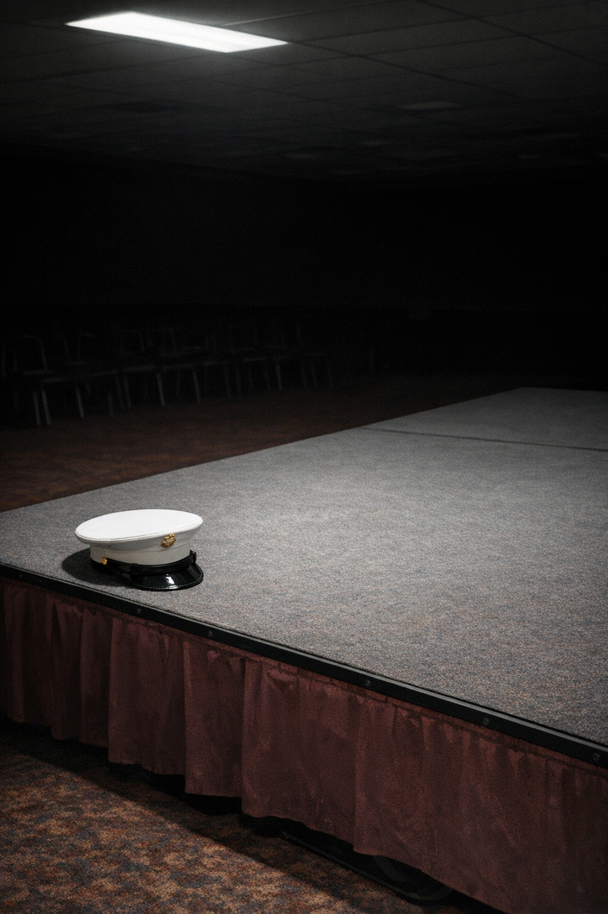

The Contingency
The Contingency
The Specimen
The outer perimeter gate hung unlocked on its chain from the post, the way she had left it that morning. She lifted the chain, passed through, and let it fall behind her. The gate led into a concrete-floored corridor roughly six feet across. The outer chain-link was on one side, poured concrete on the other three; the fourth face of the inner barrier was chain-link as well, with the heavy canvas veil running from its top rail to the ground. The corridor held a few degrees cooler than the open air outside. She set the kit bag against the footing of the outer chain-link and unzipped the outer pocket.
The order was: acoustic monitor, thermal trace, respiration indicator, field log from the inner pocket. She had established the order in the second week of study and had not altered it. The acoustic monitor’s handset had an earpiece she kept in the outside pocket. She fitted it to her right ear, plugged the cable into the wall unit’s output port, and read the display. Within the established range. She noted the time and the reading in the field log — a small gray notebook, spiral-bound, the sixth in the sequence, this one started on the seventeenth of last month — and moved to the thermal trace.
Thermal trace: within the range it had held without significant deviation for twenty-three days running. She wrote the number. The respiration indicator: present, rhythmic, amplitude consistent with every prior entry. This reading had not varied in any interpretable way since the second week of study. For a hot animal with no available knock-down threshold, this was the data the yard produced. She logged it without interpretation.
The inner barrier stood eight feet back from the outer chain-link. Three sides concrete, the fourth chain-link, the heavy canvas veil running from the top rail to the ground and tied at five intervals along each vertical seam. She had fixed those ties in the fourth week of study, when the gap at the left corner had come loose in a wind and she had arrived in the morning to find the left side opened back by a third. She had refolded the veil, secured it at closer intervals, and noted the adjustment in the field log, and then she had continued with the day. The veil had been in place since the twenty-first day. The second removal had been the last.
She unfolded the stool from its strap on the side of the kit bag and positioned it three feet back from the outer gate. The sun had gone behind the service wing before she arrived; by the time she had finished the sensor check the yard held the flat gray of the cloud cover, even across everything, the chain-link and the concrete and the veil all the same shade. She could see the veil, the two sensors on the inner barrier’s upper rail, the north wall, and a strip of sky above its top edge. She could not see the specimen. She had not been inside the inner barrier in four months.
She opened the field log to the current entry and noted the ambient conditions: time of beginning, temperature, cloud cover, wind from the north at approximately four knots, entering the yard above the level of the outer chain-link through the gap between the service wing and the perimeter wall, traveling over the enclosure rather than reaching the veil’s lower hem directly. She noted the wind in every entry, because it appeared as a variable whenever any element of the yard moved, and the record needed to reflect whether the ambient conditions at the moment of a given event were consistent with that event’s cause.
Then she plugged in and began the passive acoustic sample.
The passive acoustic sample was: she listened to whatever the yard produced. The stimulus phase had run for six weeks in the fourth through ninth weeks of study — forty-two acoustic assay sessions, systematic introduction of calibrated inputs across the full frequency range the equipment could cover, specimen responses logged at three-second intervals. The specimen had not responded to any introduced stimulus in any pattern distinguishable from the pre-stimulus baseline. At the end of the forty-second session she had compiled the results, sent them to the formal record, and not attempted a forty-third. She listened; the monitor extended the recorded register past what she could perceive on the left side; whatever signal was present would be in the log regardless of what she could hear.
The yard produced: low mechanical vibration from the building’s ventilation, entering through the concrete pad under the stool at a frequency she felt before she could resolve it as sound. Starlings above the service wing — the grouping and flight pattern were consistent, though she had not confirmed the species — banking east and not returning. The air inside the enclosure had a quality she had noted once in the formal record as an occupied weight, different from any empty enclosure she had worked in. Her instruments did not register it. She had stopped trying to describe it after the third month. The respiratory trace ran on the monitor’s display: continuous, at the amplitude it had held for eleven months.
She worked under protected contact at all times — the outer chain-link between her and the inner barrier, the inner barrier and the veil between her and the specimen — and had for eleven months. She noted the time at eleven-minute intervals, which was habit; the protocol required only start and end times. She wrote the time, looked up at the veil, and wrote the next line. In the intervals she watched the veil and the sensors and the strip of sky above the north wall. She did not review prior entries during observation sessions; she had tried it once in the third month, found it displaced her attention in a way she could not account for in the record, and had not done it again.
At the thirty-two-minute mark, the acoustic monitor’s display showed a brief irregularity in the lower-register frequency line, a waver she did not recognize from prior sessions. She watched it for ninety seconds. It did not recur. She annotated the event: time, frequency band, duration, whether the corresponding period in yesterday’s sample showed the same feature. It did not. She returned her attention to the yard.
The cloud cover darkened to the east. The strip of sky above the north wall went from pale gray to something closer to charcoal by the accumulation of small changes, no single moment of transition. Somewhere beyond the perimeter wall, a vehicle moved along what she estimated was the main access road, the sound appearing and going. The respiratory trace held its amplitude. The yard held its silence.
At the forty-seventh minute, the veil moved.
A displacement of roughly three inches at the lower-left seam, two or three seconds before it returned to its position. She watched it return and began the annotation: time, location, approximate degree of displacement, duration, wind direction and force at the moment of event, thermal trace readings in the preceding sixty seconds, acoustic monitor readings in the sixty seconds prior and following. The thermal trace had not changed. The acoustic monitor had logged nothing outside the established range. The wind reading at the moment of displacement was consistent with what it had been for the preceding forty minutes. The note she had made at the start of the session — wind traveling above the level of the outer chain-link, not reaching the hem directly — was equally consistent with producing a three-inch displacement at the lower-left seam and with not producing one.
She wrote: Veil displacement, lower-left seam, approximately three inches, two to three seconds. Variables recorded. Cause: undetermined.
After fifty minutes she closed the field log, broke down the passive acoustic setup, coiled the cable, and repacked the kit bag in sequence. She replaced the earpiece in the outside pocket. She lifted the chain off the gate post on her way out and replaced it behind her.
The service corridor ran eighty meters from the perimeter gate to the building’s rear entrance: concrete floor, utility conduit along the ceiling, low fluorescent strips along the right wall. The heavy insulated door at the far end separated the interior from the yard’s conditions. She walked it.
Through the connecting passage, the main hall was dark in its back section. The chairs were turned up on the folding tables, the overhead fixtures off. The head table at the far end stood bare. She walked through and went up the back stair to the residential wing.
Her room was the third door on the right. She set the kit bag beside the desk and drew the formal record from its case — a larger notebook, standard-issue, the fourth volume in the series, its spine marked with the date she had started it forty-two days ago. She opened it to the current page and began to transcribe from the field log in the order she had always used: sensor readings first, with range and any deviation noted; passive acoustic sample second, with duration, frequency coverage, and result; observations and events third, with complete variable annotation; time of departure last.
The entry was not long. Eleven months of entries were distributed across four volumes, and the majority of them looked as this one did: sensor readings within range, passive sample negative outside baseline, observation period with one annotated event and cause undetermined. She reviewed the completed entry once for legibility and omission. She found nothing to add.
The specimen was a wild-caught individual by every available inference, and the data characterized its presence and its rhythm and its inaccessibility with a thoroughness she would have called completeness if completeness did not describe precisely the shape of what the data lacked.
She closed the formal record, returned it to its case, and did not open it again that night.
First Light
- Brandt was already awake.
He swung his feet to the floor without checking — second bunk from the left, Costello still breathing steady in the top rack, the other nine men in the bay giving off the low ambient noise of sleep. He dressed in the dark: shirt, pants, socks, boots laced standing because the deck was cold. Jacket off the hook by the door. The latch caught behind him without noise.
The sky outside was a shade short of gray. The compound at zero-dark-thirty: the two warehouse shapes against the sky, the covered staging area on the far side, the chain-link of the perimeter fence, and the PT course running along the inside of it. He started without stretching because the first half-mile covered the same ground and took slightly less time.
Tafoya was already on the far straight. Brandt could tell by the footfalls — left heel first, heavy, the man came down like a declaration — and he closed the gap on the first curve. They ran. Cold enough that their breath showed. The two hill segments on the course were where the buried utility lines crossed under the fence line; the rut near the crest of the second hill had been load-bearing ice for two weeks now. Brandt cleared it the same way he always did.
“Two miles or three,” Tafoya said.
“Three.”
“Every goddamn morning. Same question, same hope.”
“You could stop asking,” Brandt said.
“Then I’d have to accept it.” He came down on the left heel. “I’m not there yet.”
Strickland came up on them near the second hill without announcing himself, settled into their pace. The fence moved past. The warehouses moved past. Brandt’s legs had been on this course for sixty-three days. They didn’t need him for it anymore. The second lap opened the view through the chain-link on the long south side, the access road empty and gray, and he had stopped seeing it the way he’d stopped seeing most of the compound, somewhere around day forty.
He had put in for this billet six months ago. A list in a stack of forms, his name on one line. There was an accelerated training clock attached to this compound and they had told him that up front. He’d submitted anyway. He wasn’t going to explain that to anyone, and no one was going to ask.
He ran the last quarter-mile at a pace that made his chest register an opinion and finished on the flat stretch near the administrative annex with his hands on his knees.
Tafoya pulled up next to him. “I hate this.”
“Yeah.”
“Same amount. Every single morning.”
“Very consistent,” Brandt said.
“I respect the consistency,” Tafoya said. “I still hate it.”
They walked back.
Chow ran 0630 to 0745. The hall was in the administrative annex: four rows of folding tables, a serving line along the left wall, steel trays that came out of the industrial washer always damp. Powdered eggs, reconstituted. A grain product that occupied the general category of cereal without committing to being any particular cereal. Packaged protein source. The fluorescent fixtures buzzed at a frequency you only caught when the noise in the room dropped, which it almost never did.
Tafoya picked up a protein packet with his fork and turned it over. “What was this.”
“I don’t want to know,” Brandt said.
“That’s the only defensible position. I know that.” He set it down. “I keep asking anyway.”
“You should stop.”
“I try. Every morning I come in here and I try to just eat the thing and not ask the question and then—” He gestured at the packet with the fork.
“And then.”
“There I am,” Tafoya said. He ate it with the expression of a man discharging a contractual obligation.
The coffee was real. Brandt had worked this out in the first week: if the coffee was real, everything else could be anything and he’d be fine. He didn’t know why the coffee was real and he wasn’t asking, on the theory that the reason might be a logistical accident that could be corrected if anyone looked at it. The coffee continued to be real. He continued not to look.
Drill ran 0830 to 1145. Gunny Haverford had the unit in the covered staging area behind bay two, the corrugated roof keeping the wind off but not the cold. Five or six men at a time through the standard rotation, everyone else holding the perimeter, watching, not talking.
The Gunny’s corrections were specific, brief, and did not repeat. Left shoulder. Step through. Again. He didn’t raise his voice. He found the problem, named it, and moved on; if the same problem reappeared, that was the marine’s problem now.
Kendrick ran his rotation in the first group and the Gunny said drop the elbow after the second position. Same correction as the previous three sessions. Kendrick dropped the elbow. He ran the rest of the rotation. The Gunny watched the elbow for four more positions and then stopped watching it, which was how you knew it was acceptable.
Brandt ran his rotation: first rep to shake off whatever the run had left in him, second rep clean through all seventeen positions, third rep with the Gunny repositioned to the left side. He watched the full rotation. At the end he said nothing.
Strickland caught him on the way back in. “Left side.”
“I know.”
“He’s going to say something eventually.”
“He said something last time,” Brandt said. “That was the saying-something. We’re past that.”
“Optimistic interpretation,” Strickland said.
“Maybe,” Brandt said.
The last rep he held the left side through every transition. The Gunny watched and said nothing. That was as close to a positive outcome as this sequence produced.
By 1400 the bay had settled into its afternoon configuration: Osei on his rack with his shoulder packed in ice, Tafoya and Kendrick at the folding table near the door, the card game that had been developing its own procedural case law since around day four of restricted movement. Someone’s wireless speaker running the same playlist for two weeks, low enough to establish ambient without competing with anything.
The game was a variant of spades. The rules had evolved considerably.
Tafoya drafted in the FNG around 1415 when Osei’s shoulder made him impractical for sitting at the table. Wick had been on the compound ten days. He sat down, picked up his cards, watched how calls were made and acknowledged, played two hands correctly and without comment. On his third hand, between his own card and Kendrick’s response to it, he said, “So when the list goes up — is there a briefing first, or—”
Nobody answered.
Not hostile. The question had just come in wrong — too direct, no angle on it. The list was the list. When it went up you’d know, and you’d put your name on it or you wouldn’t, and either way it wasn’t going to be a thing you discussed at the table. He played his next card and didn’t pursue it.
Around 1500 Tafoya played a five of hearts. “This invalidates the previous hand.”
“That’s not a rule,” Kendrick said.
“Day Twelve Ruling.”
“The Day Twelve Ruling was about the discard pile.”
“The discard pile established the precedent.”
“That’s not what precedent means,” Kendrick said.
“I know what precedent means.”
“Use it correctly then.”
“I just did,” Tafoya said. He waited.
Kendrick looked at his cards. He looked at the table. He looked at Brandt. Brandt studied his own hand and said nothing. Kendrick set his cards down. “This is a soup sandwich.”
“Thank you for that assessment,” Tafoya said.
From his rack, Osei said something unintelligible. Nobody could make out the words.
“The ruling still stands,” Tafoya said, in the direction of the rack.
Osei did not respond. Whether that was a response or not was impossible to determine.
Wick played his next card correctly.
Wick said, “What was the Day Twelve Ruling.”
Tafoya looked at Kendrick. Kendrick looked at his hand.
“It’s what it sounds like,” Tafoya said.
Wick waited.
“Day twelve. Ruling. That’s it.” Tafoya set his card down. “Play your card.”
The Gunny came through at 1600, looked at the table without saying anything, and the table dispersed in the way it always did when the Gunny looked at it without saying anything.
By 1800 Brandt had his gear on the deck. It was fine — had been fine two days ago — but cleaning it gave his hands something to do and his hands needed something. He ran the sequence: disassemble, clean, function-check, reassemble. His hands knew the order and didn’t need him for it anymore.
Tafoya came in and sat on the edge of his rack across the bay. “Shoulder or hip.”
“Hip,” Brandt said. Position six, left side. Always position six.
“You think it’s six or you think it’s everything past position three and the hip is just where it shows up.”
Brandt considered this. “Six.”
“I’m just raising the possibility.”
“I know what you’re doing,” Brandt said. “It’s six.”
“Okay,” Tafoya said. He watched Brandt run the function-check. “He’s going to add a morning sequence.”
“Maybe.”
“Definitely. Very on-brand.”
“Nothing wrong with that,” Brandt said.
“No,” Tafoya said. He looked at the ceiling. “I’m not complaining.”
“I know.”
Costello came in at 1845 and was horizontal and asleep in approximately four minutes. Brandt had held a theory about this since day three: that Costello’s ability to go out on any surface in any situation was either a gift or something wrong with him, and that the difference was impossible to tell and didn’t matter anyway.
The bay filled back in over the following hour. Shower sounds. Geedunk wrappers. Someone’s boots hitting the deck from too high when they dropped them. Tafoya reappeared around 1930 with two orange packets and handed one to Brandt without being asked. Brandt didn’t ask where the orange packets had come from. Some things were better not audited.
The Gunny appeared in the doorway at 2045. “Lights at twenty-two hundred.” He was gone before anyone could have responded.
At 2200 the lights went off and the bay settled. Eleven men in the converted dimensions of what had been a supply warehouse. Outside: the foot patrols on their circuit, a vehicle once on the access road, the compound at night which was the compound during the day with the activity taken out of it.
Brandt lay on his back with his feet toward the door. He was tired in the way of a body that had used itself correctly. Not sore. Just worked. Tomorrow the schedule would be on the annex board by 0600 and he’d have already run two miles before he read it.
He was where he had put himself.
That was fine with him.
What She Tried
The baseline timer required three minutes before she could initiate the tone sequence. She stood in the corridor with the field log open on her knee and watched the veil. Mid-morning, the light coming through the gap above the north wall flat and diffuse, the cloud cover uniform enough that nothing cast a shadow in the enclosure. The acoustic monitor read within established range. The thermal trace held at its parameter. The speaker was in place against the inner barrier’s chain-link face, its cable running along the concrete floor to the signal generator in the outer pocket of the kit bag, the connection taped at the lower rail so the hem of the veil would not displace it when the ventilation system cycled. She had tested the output the night before and confirmed the speaker reproduced all three target frequencies within specification.
Three minutes.
She had been revising the setup since the announcement. Not because the designation changed what she was studying — the specimen had been in the yard since the first week of last year, and its inaccessibility had not changed in eleven months — but because the announcement had given the study a concrete endpoint. She had told the president’s office, before the announcement was made, that conclusive evidence of the specimen’s cognitive status was not available and might not become available on any timeline they could offer. She had been trying a different configuration of the same methodology since the night she learned the date.
The sedation trials had run for fourteen weeks in the first four months of study. Nine compounds, sequenced in order of predicted efficacy for a wild-caught individual of unknown species, beginning with an alpha-2 agonist at a dose calculated from the specimen’s thermal-signature mass estimate with a fifty-percent correction above the standard formula for unknown receptor profile. The knock-down threshold was what she had never found. The first three compounds produced no behavioral change. The fourth — a barbiturate compound she had obtained through the pharmacy officer in week seven, after the first three had failed and she had exhausted the available synthetic analogs — produced an acute arousal response. Eight minutes of elevated acoustic output, a two-degree thermal increase, sustained veil movement in a pattern uncorrelated with the ambient wind reading. She had not used the word sedation to describe it. She had entered it as acute arousal response, recovery within standard session period and continued to the fifth compound. Compounds five through nine produced no behavioral change. After the fourteenth week she had written the sedation trial summary and filed it: no knock-down threshold achieved; pharmacological agents available at this installation are insufficient for this specimen, whether due to physiology, receptor profile, or metabolic mechanism cannot be determined from available evidence. She had moved to the next phase.
The acoustic stimulus phase had run for forty-two sessions across six weeks, covering the full frequency range from the lower infrasound limit to the upper ultrasound limit of the available equipment, stimulus presentations calibrated across twelve frequency bands, every session logged at three-second intervals. The specimen had not responded to any introduced stimulus in any pattern distinguishable from its pre-stimulus baseline. She had checked for marginal trends across all forty-two sessions, found none, and marked the phase complete.
The cognitive task apparatus had lasted six hours. The maintenance access had been welded after that session.
In the sixth month she had mounted a high-frame-rate camera to the inner barrier’s upper rail, angled to cover the lower section of the inner space where the thermal trace’s anterior position suggested the specimen spent its resting hours. Over twelve sessions the camera produced images of the veil’s interior surface and nothing else resolvable. She had analyzed the micro-movement patterns of the veil against the acoustic and thermal logs, found a correlation that held for four sessions and was absent for the subsequent eighteen, and filed the analysis under insufficient baseline for interpretation.
What remained was the outer barrier. Eleven months of passive acoustic sampling had produced a comprehensive baseline: the specimen’s resting acoustic output across the full frequency range, its thermal signature across all times of day and season, its respiration pattern, the correspondence between wind speed at three monitoring positions and veil displacement. She had the most complete behavioral record of an alien individual in human custody, and the record described an individual she could not study.
The cognitive bias test had been in her methodology notes for eight months. She had listed it as contingent on a behavioral baseline sufficient to establish endpoints. Standard implementation required a conditioned individual — one trained to expect a specific outcome at a specific cue, so that an ambiguous cue could be presented and the subject’s interpretation inferred from the response direction. She did not have a conditioned individual. She had a specimen that had cooperated with no protocol in any measurable way, and one acute arousal response from month three that represented the only session in eleven months in which the specimen had produced a behavioral change in response to an introduced stimulus.
She had derived two endpoint frequencies from the month-three session’s acoustic output: the frequency that appeared at the onset of the arousal response and the frequency that appeared at its recovery. She treated these as proxy endpoints — onset frequency as the negative anchor, recovery frequency as the positive anchor, on the reasoning that arousal onset and arousal recovery corresponded to different affective states in any individual capable of affective states. The ambiguous midpoint was a frequency the specimen had not been exposed to in any prior session. This was not a clean implementation of the cognitive bias methodology. It was the implementation the data and the timeline would support.
The timer reached baseline end.
She initiated the sequence.
Tone A at 440 Hz, twelve seconds. The acoustic monitor displayed within baseline range throughout the presentation. The thermal trace held. The veil did not move. She marked the time and logged: A1, no response above baseline across all three metrics.
Twelve-second inter-stimulus interval.
Tone C at 940 Hz. At nine seconds into the presentation the acoustic monitor’s lower-register display showed an amplitude increase in the sub-80 Hz band — a brief waver she did not resolve through the earpiece before the display registered it; she adjusted the earpiece against her right ear and confirmed the reading. Sub-80 Hz, duration approximately three seconds, amplitude 1.4 standard deviations above the passive-sampling baseline. She checked the thermal trace: a point-four degree increment in the anterior reading, at the upper bound of the measurement error range. The veil was undisturbed. She logged: C1, acoustic response sub-80 Hz above baseline. Thermal increment point-four degrees, anterior. Movement: none.
Tone B at 1440 Hz, twelve seconds. The monitor returned baseline readings throughout. The thermal trace recovered to its prior reading within four seconds of Tone B’s onset. The veil did not move. She logged: B1, no response above baseline, thermal recovery four seconds post-C1.
Second pass. Tone A: no response above baseline. Tone C: acoustic response in the sub-80 Hz band, duration approximately two seconds, amplitude 1.1 standard deviations above baseline; thermal increment point-three degrees, recovery within ten seconds of offset; veil undisturbed. Tone B: no response above baseline.
Third pass. Tone A: no response. Tone C: acoustic monitor returned baseline readings throughout the twelve-second presentation; thermal increment point-two degrees, within measurement error range; veil undisturbed. Tone B: no response.
She ran the endpoint confirmation — Tone B presented three times with twenty-second inter-stimulus intervals — and the monitor returned baseline readings on all three exposures.
She marked the end time, closed the protocol, and broke down the setup. Speaker and cable bagged, tape removed from the lower rail. Sensor check: within range, established parameters. She logged the end-of-session ambient conditions and walked the corridor to the outer gate.
At the workstation she opened the formal record and transcribed the session in the order the protocol required. Then she wrote the assessment.
Acoustic response to ambiguous stimulus (Tone C): sub-80 Hz amplitude increase, 1.4 standard deviations above the passive-sampling baseline on the first presentation, 1.1 standard deviations on the second presentation, within baseline range on the third. No comparable response observed during Tone A or Tone B presentations across any sequence repetition. Two of three Tone C presentations produced a response above baseline; this distribution is non-random with respect to the tone sequence.
Thermal trace: point-four degree anterior increment at first Tone C presentation, point-three degrees at second presentation, point-two degrees at third presentation (within measurement error range). Recovery to prior reading within twelve seconds of offset in all three instances. No comparable response observed during Tone A or Tone B presentations. Non-random distribution with respect to the tone sequence.
Movement indicator: no veil displacement observed on any presentation across all three sequence repetitions. This metric did not meet the pre-specified threshold for a non-random response.
Assessment: two of three metrics produced non-random distributions with respect to the ambiguous stimulus. This pattern is consistent with a negative judgment bias response — a directional asymmetry in which the ambiguous stimulus produced responses more similar to the predicted negative-endpoint response than to the positive-endpoint response. Single trial. Standard significance criteria not met. Cannot rule out environmental interference; acoustic response absent on third Tone C presentation; thermal increments at or near measurement error range on second and third presentations. Not replicable on this timeline with current equipment.
She read the entry twice.
The record she had built over eleven months described an individual who was present and alive and unreachable by any method available to her. The formal record was detailed enough that anyone reviewing it would understand exactly which methods she had tried and exactly what each had produced. Tonight the record had one entry that differed from every other entry in four volumes in one specific way: two of its three metrics had produced non-random distributions in a single trial. She knew precisely what that meant. She knew precisely what it did not mean. A result consistent with a hypothesis was not a test of the hypothesis. She could not send this to the president’s office. She had sent nothing to the president’s office in eleven months that she would call evidence, and tonight’s entry did not change that.
She wrote the next session number in the margin below the entry and drew a line across the page.
She did not close the formal record.
Voluntary
The sheet was standard paper, letter-size, printed not handwritten. His name was eighth on the list. He read it the way you read a name you already know will be there: the recognition flat, the eye moving on before the fact had registered.
Fourteen names. Ranks and last names, one to a line. Haverford had posted it in a clear plastic sleeve on the board outside his office in the administrative annex corridor. It had been there since before chow — there were boot prints in the dust in front of the board that hadn’t been there the day before.
He read to the bottom, then read it again.
CPL FARROW, R. was second from the end. The name had been on the compound three weeks; he’d seen it on the bunk assignment sheet when the third bay rebalanced. One kind of familiar — roster-slot familiar, name-on-a-form familiar. He had to wait a half-second for the rank and the unit notation to resolve into the other kind.
He was still at the board when Tafoya came in from the PT corridor.
“You on it?” Tafoya said.
“Yeah.”
Tafoya looked at the sheet. He stood there long enough.
“Farrow’s on it,” he said.
“I see it.”
“Huh.”
Brandt pulled the sleeve off the board and carried it back to the bay.
He read the names out loud. Rank and last name, one at a time. When he got to Farrow the bay went quiet. About two seconds of quiet, which was about a second longer than it took to say a name.
“What’s he trying to prove,” Kendrick said, to the center of the room, to nobody.
Nobody answered it.
“Bet,” Costello said.
Wick said, “First one through gets the window seat.”
“Chow on the other side’s better,” Tafoya said.
That landed different. The rhythm came back. Someone said they weren’t going to miss the powered eggs. Someone else said actually they might miss the powered eggs, because the powered eggs were consistent in a way the meat course was not. Kendrick said the meat course had run short twice in three weeks and he had filed a formal complaint with the kitchen staff and expected to hear back never. Costello said that was the most optimistic behavior Kendrick had demonstrated in two months.
The sheet passed around the bay. Most of the men looked at it once, confirmed what they already knew, and set it on the next bunk without saying much. A few people read it slowly. By the time it got to Wick at the far end of the rack it was dog-eared at the corner of the plastic sleeve.
Haverford came through at 0742. Near door, the length of the bay at his regular pace, far door. He didn’t stop at the bunk where the sheet was sitting. He didn’t look at it. He didn’t say anything. Nobody spoke while he was in the bay, and for a few seconds after the far door closed nobody said anything either.
“Right,” Tafoya said.
“Yeah,” said Brandt.
The form packets were in the administrative annex by 1400. Liability acknowledgment, emergency contact designation, personal effects declaration. The queue at the desk went out the annex door and a few steps into the corridor — most of the fourteen, in no particular order, waiting their turn in a line that moved slowly because the lance corporal behind the desk was thorough. Brandt took his packet and stepped away from the desk to fill it out against the wall.
The liability acknowledgment was structurally the same form he’d signed on three prior deployments. The emergency contact was the same field. The personal effects section had two lines he hadn’t seen before.
The first asked whether he wanted his personal effects donated to an institution of his choice rather than returned to his designated contact.
The second asked whether he wanted to record a personal statement of any length for permanent archive.
Permanent was in the same font as the rest of the sentence. It looked like it had been in the form for a long time — put in early by whoever drafted it, never taken out, because taking it out would have required someone to make a decision about the word that probably nobody wanted to make.
He checked the donation box. Left the personal statement blank. Signed and dated.
On the way out he passed Farrow in the queue, waiting his turn at the same desk, looking at his own packet.
The bay went quiet earlier than usual that night.
Nobody called it. Costello went down at 2140, which was twenty minutes ahead of his normal. Osei had his shoulder stretched out on the lower bunk and wasn’t talking. The card game ran out of players around 2100 and nobody proposed a restart. Brandt lay in his rack after lights-out and listened to the compound: the ventilation in the corridor, a truck on the access road, rain that had started an hour earlier hitting the corrugated overhang above the staging area door.
The sheet was still on the board. He’d seen it there when he passed through after dinner.
The new sequence started at 0530 the following morning.
The previous sequence had seventeen positions, four cycles through, every morning for seven weeks. The new sequence had eleven positions and Haverford ran each one through eight repetitions before moving to the next. Nobody had done eight repetitions in any session Brandt had been part of. The kind of silence that means a complaint exists but has nowhere to go had settled over the line by the third position and stayed there.
It was the first cold morning in ten days — not hard cold, but air with an edge. He could feel it in his lungs on the way across the staging area, and it helped, actually.
The sequencing was tighter than the old version: shorter rest intervals, more lateral movement in the transitions. By the sixth position his left side was finally giving him what it owed — the hip, not the shoulder, the correction that Haverford had never bothered to name because it hadn’t been worth naming until now. He gave it. His left side accepted it without ceremony.
By position seven most of the bay had stopped looking at each other during the transitions. They were past the point of the look. You ran position eight because Haverford ran position eight, and that was the whole of the reasoning.
Farrow was three positions to his left.
He ran it through the same as everyone else. No difference in the transitions, no visible hesitation. When Haverford came back around to position five on the second pass and stood in front of Farrow for three counts, Farrow adjusted his weight and hip angle without being told. Haverford moved on. He stood in front of six other men that morning at one position or another. Farrow was one of them.
They ran the full sequence twice through. Haverford dismissed them at 0823 without commentary.
At chow Brandt sat with Tafoya, who had a bruise developing under his left eye from the fourth-position transition and was declining to acknowledge it.
“You should ice that,” Brandt said.
“It’s fine.”
“That’s what Osei said about his shoulder.”
“Osei’s shoulder is not fine. This is fine. Those are different situations.”
They ate. The meat course had run sufficient, which was better than the previous week. At the next table two of the men were arguing about the personal statement field on the form packet — whether leaving it blank was the same as declining or whether declining required checking a box that nobody had checked. Nobody resolved it.
The card game came back at 1600. The Day Twelve Ruling was still in dispute, Osei’s shoulder was still iced, the playlist was the same playlist it had been since week two. Brandt played two hands and folded out of the third.
Kendrick came and sat on the adjacent bunk. He wasn’t holding cards.
“Can I ask you something,” he said.
“Probably.”
“Why’d you volunteer.”
The question had been in the bay since the list went up — not specific to anybody, just the thing itself floating in the air of the room — and Kendrick was putting it to Brandt’s face directly. There were four people in earshot who were not pretending to be somewhere else.
“Gate’s the only real door left open,” Brandt said.
Kendrick looked at him. “That’s it?”
“Yeah.”
Kendrick nodded once. He picked up his cards.
The hand resumed.
The rest was also true, but the rest was the kind of thing you didn’t put out in the bay two days after the list went up. The belief that the gate was worth it, that going through blind was better than staying behind certain — he’d thought it enough times that he could have said it clearly if he needed to. That wasn’t his job.
The lights went off at 2200.
Brandt lay in his rack and ran the new sequence through once in his head — each position, each transition, the left-side correction held in place. The sheet was back on the board outside Haverford’s office. Fourteen names, same as this morning.
Costello was asleep before 2210. Same as always.
The Report
The new frequencies ran from 2,200 Hz to 8,400 Hz in overlapping bands of four hundred. She had not tried this configuration before — not because it had seemed unlikely to yield a result, but because she had exhausted the configurations that seemed likely first.
She plugged the acoustic monitor’s cable into the wall unit and fitted the earpiece to her right ear. The yard was in its pre-dawn stillness: the ventilation unit on the east face of the building cycling through its lowest interval, a vehicle somewhere past the perimeter fence, the frequency floor she had catalogued in the study’s first weeks and had not needed to catalogue again since. She positioned the portable speaker against the inner barrier’s lower rail, confirmed the connection to the signal generator, and noted the start time in the field notebook. The veil hung in the predawn shadow. The thermal trace pickup was reading ambient. She waited the three-minute passive baseline period and then ran the first band.
The acoustic monitor registered ambient yard noise. Nothing in the stimulus range. She logged the absence at the half-minute intervals the protocol required and watched the thermal trace for secondary indication. The veil did not move. At the end of the first band she entered the results in the field notebook — stimulus range, acoustic response, thermal, veil indicator, notation — and ran the second.
By the fourth band the creature had produced no response she could log as signal. She ran the fifth and sixth bands with the same result across all three metrics. On the seventh, the acoustic monitor produced a reading that climbed four-tenths of a standard deviation above the passive baseline for eleven seconds and returned to baseline without recurrence. She noted the time stamp and the duration and held on the monitor for two full minutes to see whether the reading would repeat. It did not repeat. She logged it under ambient variance and moved on.
At 0749 she closed the session. The absence was data. She unplugged the cable from the wall unit and coiled it and returned the earpiece to the right outside pocket of her kit bag where it lived. The outer perimeter gate was hung on its chain. She lifted the chain off the post and went through and put it back, and walked the service corridor toward the building.
She did not write anything in the formal record on the way in. The formal record had been open since the session three days ago and she left it open.
She had the report template open by 0900.
The structure was standard format: methodology employed, results obtained, conclusions supportable, conclusions unsupportable, recommendation. She had written reports in this format before — for the pharmacy officer when the sedation trials closed in month four, for the facilities officer when the maintenance access was welded in month five — but those had been single-phase assessments. This was the formal comprehensive report the president’s office had been waiting for since the Contingency was designated. She had known it was coming.
She wrote through the methodology section without stopping.
Eleven months, six phases. Phase one: protected contact observation, all times of day, all seasons. She had run behavioral observation sessions from before dawn through late evening, across the summer, the fall, and into winter: the creature’s responses to natural light changes, temperature changes, barometric changes, the compound’s shift schedules, the altered acoustic profile of the facility at zero-dark-thirty when the administrative wing was empty. Behavioral observation battery total: four hundred and eleven sessions. No stimulus applied. No behavioral response above passive ambient. The earliest session dated September of the first year; the most recent, three days prior to this report.
Phase two: acoustic assay battery, forty-two sessions across weeks four through nine, frequency range matched to the observation baseline from phase one. No result above ambient in any session.
Phase three: sedation trials, fourteen weeks, nine compounds tested in ascending order of predicted efficacy for a wild-caught individual of unknown species. She reproduced the summary language she had already filed with the pharmacy officer, because it remained accurate: No knock-down threshold achieved. Pharmacological agents available at this installation are insufficient for this specimen. Mechanism — physiology, receptor profile, or metabolic — cannot be determined from available evidence. She noted in the appendix, as she had noted in the phase report, that the fourth compound — a barbiturate administered in study week seven — had produced an acute arousal response rather than sedation: eight minutes of elevated acoustic output, a two-degree thermal increase, sustained veil movement uncorrelated with ambient wind, full recovery within the session period. It was documented under phase three appendix A as an acute arousal response. It was not sedation.
Phase four: cognitive task apparatus, study month five. She wrote the sentence she always wrote for this phase: Session terminated at six hours. Maintenance access to the inner barrier was welded upon session close. No behavioral data recovered from that session that could be independently logged. She did not elaborate.
Phase five: acoustic cognitive bias test, single trial, using endpoint frequencies derived from the month-three arousal response acoustic output. She reproduced the formal assessment language from the open record: Consistent with a negative judgment bias response. Cannot rule out environmental interference. Not replicable on this timeline with current equipment.
The results section took twenty minutes to write. Sedation: no threshold established. Acoustic assay: no signal identified across the battery. Cognitive bias test: one trial; two of three metrics non-random with respect to the tone sequence; one trial is not a result; standard significance criteria not met.
Then the conclusions.
Supportable conclusions required four sentences. The specimen could not be sedated with any compound available at this installation. Physical examination had not been achievable under protected contact protocol. No acoustic stimulus across the forty-two-session assay battery had produced a repeatable response above ambient. The camera observation protocol in month six had yielded nothing interpretable.
The unsupportable conclusions section was where it slowed.
She wrote: This study cannot confirm or deny the specimen’s capacity for higher cognition.
She looked at the sentence. It was the sentence the study had produced. The study had been conducted with the full complement of equipment and methodology available at this installation over eleven months, and this was what it had produced — not an imprecise sentence, but the accurate one. What the methodology could not yield was the certainty she had been accumulating across eleven months of sessions, across four volumes of formal record and six field notebooks, that the sentence — while accurate — was not the whole of what she knew.
She could not put the rest of it in the report. The report required what the methodology had produced. What she was certain of was not what the methodology had produced, and a formal assessment sent to the president’s office was not the place for certainty that could not survive review.
She wrote the recommendation: Proceed without behavioral intelligence.
She read the document through from the beginning. She changed three words in the methodology section and corrected a transposition error in the appendix. She changed nothing else. She sent the report.
The aide from the president’s office was named Chen. He appeared at the workstation door at 1430 and knocked on the open frame.
“Dr. Reyes. I wanted to confirm receipt — the formal assessment came through this morning.”
“Good.”
“The president’s office has it. A brief acknowledgment will come through the usual channel.” He was holding a clipboard. He consulted it in the way people consult clipboards when the information they need is not on the clipboard. “There’s also a logistical question. The send-off ceremony — your presence isn’t required, but it isn’t excluded. We’re finalizing the attendee list and if you have a preference about attending, this week is the right time to communicate it.”
“I’ll be on the compound.”
“Yes — but the dinner specifically.”
“I’ll be available.”
He wrote something.
“One more thing — whether you’ll continue your observation sessions through the ceremony date.”
“Yes.”
“Understood.” He capped his pen. “Thank you, Dr. Reyes.”
She was already looking at her workstation.
She went back to the yard at dusk.
She brought the kit bag out of habit and the notebook; she set neither up. The outer perimeter gate hung on its chain the way it did between sessions. She lifted the chain off the post and went through.
The corridor between the outer chain-link and the inner barrier was in shadow. She stood at the inner barrier and looked at the veil. The canvas had grayed out over eleven months — from whatever it had started as to the same gray as the poured concrete on three of the enclosure’s four sides, which might have been chosen for that and might not have been. The first team to put it up had not left notes she could find. The two sensors on the upper rail were at their passive settings, which was the same as off; she had not come here to run the monitor.
The light was going in the west, past the building’s roofline. She could hear the ventilation unit cycling through its evening interval. On the far side of the compound, the ordinary sounds of a facility that had not changed its daily schedule in eleven months.
Her left ear received the yard at a slight remove — not absent, but at a reduction she had adjusted to long enough ago that she rarely named the adjustment. The ring moved in it, low and structureless, rising and falling without pattern. On the morning in study month two when it had started, she had been two feet from the inner barrier’s chain-link face and the creature had produced a sustained vocalization aimed directly at her, approximately four seconds. The following day the threshold had shifted and had not shifted back. The question she had written in the field log that week was the same question she had carried into every session since. Attack, or the only word it had.
The report was sent. Whatever answer might have existed behind the veil was still behind the veil, and the months she had had to find it were now measured in weeks.
She looked at the canvas until the light finished going. Then she turned and walked back through the outer gate and lifted the chain onto the post.
The compound lights were on by the time she reached the service corridor. The kitchen was dark — no delivery until Thursday. The overhead lights in the main hall passage ran long and yellow down the length of the concrete floor.
She walked to the residential wing. Her room was the third door on the right.
She set the kit bag on the chair. The field notebook was in the outer pocket, unwritten-in. Outside, the lights in the distant buildings held steady in the dark — the administrative annex, the covered staging area, two lit windows in the west corridor she had never had occasion to ask about. The yard was behind her, 80 meters and a heavy door. The report was in the president’s office now. The recommendation — Proceed without behavioral intelligence — was in someone else’s hands. Whatever proceeded from it was outside the study: in the mechanism she had studied for eleven months without being able to understand it, and in the decision that had already been made.
The ring was low in the left ear. The way it always was when the compound was quiet.
She did not open the notebook.
Dry Runs
- The cleared space behind bay two was lit by two work lights on poles, yellow-white and functional, the kind that put a flat circle of light on a specific area of ground and left the edges dark. Fourteen men in a loose block on the poured concrete. Breath visible. The cold had come in overnight — not hard cold, the edge kind, the first of the season.
Haverford stood at the front with his clipboard.
“Five runs this morning. Break at 0800. Three this afternoon, 1300. Admin from 1600.” He looked up. “Questions.”
It was not a question. Nobody asked one.
Behind Brandt, Costello said, “Hey. What time is it.”
“Zero-dark-forty-five,” Tafoya said, from somewhere to the left.
“Outstanding.”
“Positions,” Haverford said.
The sequence had eleven positions. Brandt’s body knew them the way it knew the width of his bunk, the lip of the step into the administrative annex, the third-from-left locker in the gear room that needed lifting to open. Not thought. Residue. You moved into position three and the hip angle had already resolved before the count finished. By repetition five of the first run the mind could wander and the body ran the sequence anyway.
That was either the point of repetition or the problem with it. After enough weeks on the same sequence Brandt couldn’t tell which.
First run: clean. Haverford walked the line during the transitions, watching the spacing, watching the timing between elements. He didn’t stop anyone. At the end he looked at them for a moment.
“Again,” he said.
Second run. The spacing was better — Brandt could feel it even without looking. You learned the rhythm of the men around you by texture, by the absence of a gap where a gap should not be. The timing from four to five was slightly wide. He felt it before Haverford called it.
“Hold.”
They held.
“From four.”
They ran four to six. Then four to nine. Then the full back half twice through before Haverford waved them toward the break.
It wasn’t named. The timing gap wasn’t the timing gap, wasn’t anyone’s. You named the position. You ran it again. That was how it got fixed.
The geedunk was crackers in sealed packets, nutrition bars the color of sand, and an insulated cooler with water and a sports drink that smelled like it was going for citrus. Brandt took water and crackers and found table space in the administrative annex.
Tafoya sat across from him. He had a new mark developing under his left eye — one of those bruises that spent two hours becoming what they were going to be.
“What’s on your face,” Brandt said.
“Position nine.”
“That didn’t come from position nine.”
“Position nine aggravated what position three started. The distinction matters.”
“You’re filing a complaint.”
“Formal complaint. I need a witness.” Tafoya cracked open a water. “I also want it on record that my hips are not young hips. Transitions from three to four are, structurally speaking, aggressive.”
“Your transitions are fine.”
“They are being held together by spite and institutional momentum.”
“That’s what muscle memory is.”
Tafoya stopped. He picked up a cracker.
Kendrick dropped onto the bench beside Tafoya and looked at the tray. He picked up a nutrition bar. Put it down. Picked it up again.
“I want to raise a formal concern,” he said.
“Related to the powered egg complaint,” Tafoya said.
“Related. Adjacent. I have concerns about whether these bars and the concept of food occupy the same ontological category.”
“They have nutrients in them,” Brandt said.
“I’m not questioning the nutrients. I’m questioning whether that’s sufficient for the word ‘food.’ Whether there has to be a decision somewhere in the process. Someone who thought: this is what people will eat.”
“Someone thought it.”
“Who,” Kendrick said. “I want a name. I want to know who signed off on citrus-adjacent.”
Brandt ate a cracker.
Wick came from the cooler carrying two waters he hadn’t been asked for. He set one in front of Tafoya.
“For your face,” he said.
“Thank you, Wick.”
Wick looked at the mark under Tafoya’s eye. You could see him working something up.
“You know,” he said, “that could go on the next-of-kin form. Under injuries sustained prior to—”
“I want to be very clear,” Tafoya said, “that I am going to remember this.”
“I didn’t mean—”
“Drink your water,” Kendrick said. Wick sat down and drank his water.
There was a brief argument about the card game — specifically whether the Day Twelve Ruling applied to the afternoon rotation or only to evening play. Osei said it applied to any game convened on the compound at any hour. Costello said the Day Twelve Ruling had never been interpreted to cover afternoon configurations and anyone claiming otherwise was confused about the ruling’s scope. Wick asked what the Day Twelve Ruling was. Several people told him different things, none of which were accurate.
Osei’s shoulder looked better. He was holding his water normally, not favoring the side. Down the table, Farrow was listening to something Strickland was saying. Brandt couldn’t hear Strickland from where he was sitting. Whatever it was, Farrow said something back, and Osei laughed — the actual kind, not the performed kind. Farrow didn’t seem to track whether anyone noticed.
“Your hip’s getting better,” Tafoya said, across from Brandt. “Left side. Been watching.”
“Haverford hasn’t said anything.”
“He’s not going to. He’ll correct the timing from four to five until you’ve sorted the hip yourself. That’s how he does it.”
“I know.”
“How long.”
“Since week one. Left side at six.”
“I clocked it at week two,” Tafoya said. “Was going to say something. Thought you had it.”
“I had it by week three.”
“Then you’re fine.”
Haverford appeared in the doorway at 0756. He looked at the room without saying anything, then turned and went back out.
“Outstanding,” Costello said. Wick looked like he was making a mental note about the difference between that and his own attempt.
Third run. The fatigue was in the shoulders now and in the deep extensors of the hip, the ones that work the transitions rather than the static positions. Not heavy. Present. The body’s accounting of where it was in the day.
From three to four the spacing widened slightly. Haverford’s head came up. He let them run through four, through five. On the transition from five to six, Strickland’s left foot came in half a beat late — his weight followed it, he had to recover hard on the six-position landing.
“Strickland. Five. From four.”
Strickland ran it. His timing was there.
“From three.”
Three to six. Clean.
They finished the third run.
“Fifth run,” he said. “From three.”
The fifth run was the best of the day — not the fastest, not the cleanest at any individual position, but the most even. Strickland’s correction had landed in the group’s timing now, not just in his foot, and the gap between five and six had tightened without anyone being told to tighten it. Five runs did that. Two runs couldn’t.
Haverford said: “1300. Don’t be late.”
The three afternoon runs were harder. By the second afternoon run the body was past the point of pretending about it. Brandt’s left hip gave him real information on the third — not complaint, information, the kind that comes from genuine sustained use. He held position six and the hip held it with him, gave what it owed, stopped making a point of giving it.
They ran the final run clean. Haverford watched without stopping anyone. At 1548 he said: “Good.”
Then: “Tomorrow. Same. Gear inspection in the afternoon block.”
He left to deal with whatever Haverford dealt with when he wasn’t standing in front of them.
Admin ran 1600 to 1715: schedule sheet, gear check, a signature-and-date form that turned out to be a reissued emergency contact form, the same fields as the version he’d already signed. He signed it again.
By 1730 the bay had its evening sound. The vents. The washroom detail at the far end of the corridor. The wireless speaker on the same playlist it had been cycling since the early weeks. Brandt had stopped hearing it as music. He heard it as the sound of the bay being the bay — background, like the specific creak of the second bunk down when Costello shifted his weight, like the distant truck on the access road that always seemed to be making the same run.
He was cleaning kit when Tafoya sat down on the bench beside him.
They worked for a while. The bay had that kind of ease now — silence that was functional rather than uncomfortable, the product of weeks in the same space. Tafoya cleaned a piece of kit. Brandt worked on a connector housing. The playlist moved through something slow. Tafoya didn’t comment on it, which meant he was running something around.
“Can I ask you something,” Tafoya said.
“Sure.”
“Why’d you put your name on it.”
Not the room’s question given a direction, the way Kendrick had asked it. Tafoya had held this one for himself. Selection, then the unit, then the compound, then this — they went back far enough that the question had weight. Brandt put down what he was holding.
“Gate’s the only door still open,” he said.
Tafoya worked for a moment.
“That’s all of it?” he said.
“That’s what I can say out loud.”
Tafoya looked at him — not long. A read, not a stare.
“Okay,” he said.
He picked up his kit rag. He asked whether Haverford was going to address the hip angle at position six directly or just keep running the timing correction from four to five until they caught up with it themselves. Brandt said Haverford would never name the hip directly. Tafoya said he’d name it at the point of maximum efficiency, which put it at two sessions at most. They went back and forth on that for a while, quietly, with the playlist going and the rest of the bay settling into its evening around them.
The subject did not come back.
Lights out at 2200.
Eight runs total. The unit was intact. Gear in serviceable condition. Tomorrow was the same schedule plus a gear inspection, and the day after that was probably the same schedule again. At some point the schedule would change because it was time, not because the sequence had finally been run correctly enough times. The gap between what repetition built and what the actual thing would ask of them was not something five runs a day closed. Running it eight times a day didn’t close it faster.
He ran the sequence through once in his head — positions one to eleven, the transitions, the left side at six where it was supposed to be.
Costello was asleep before 2210.
Eleven Months
The compound lights were on in the service wing. This was not the usual configuration for this hour.
She came to the yard later than she usually came — later than any of the four hundred and eleven sessions in the observation battery, which had covered all times of day across all seasons but had not extended to this hour. The service wing was lit along its full length. From somewhere inside it, the sounds of furniture being moved: heavy slides, a scrape, voices she could not parse at this distance giving short instructions. Earlier in the evening there had been a delivery at the back gate; she had heard the truck from inside the building. The dinner was days away now, not weeks, and the compound was arranging itself accordingly.
She lifted the chain off the post at the outer perimeter gate and went through and hung it again behind her. The stool went three feet back from the outer gate where it always went. The kit bag went on the concrete beside it. The earpiece for the acoustic monitor was in the right outer pocket where it lived between sessions. The cable was not deployed. The thermal trace pickup was at its passive setting on the upper rail. She had not come to run a session.
The veil hung in its usual state: gray canvas from the top rail to the concrete floor, the five tie points along each vertical seam, the lower hem weighted with a length of pipe to prevent uplift from the ventilation unit’s output cycle. The canvas had been the color of unbleached cotton when the first team put it up; it had grayed over the months to a shade that was now indistinguishable from the poured concrete on three of the enclosure’s four sides. It had been in place since the twenty-first day of the study. It had been removed twice. The second removal had been the last removal.
She had been inside the inner barrier twice. She did not go back.
The sedation battery had run fourteen weeks, from study week four through the end of month four. Nine compounds tested in ascending order of predicted efficacy for a wild-caught individual of unknown species. The documented framework for unknowns began with the agents most likely to affect large mammalian physiology and worked down through what the pharmacy officer could source through approved channels. The first compound was an alpha-2 agonist, administered by remote delivery through the feeding port at the standard dosage for a large wild-caught individual; the second and third — a dissociative and a synthetic opioid — went in the same way, at the prescribed intervals, in the documented sequence of dose and observation window. None of the three produced a behavioral change she could log.
The fourth compound was a barbiturate. She had requested it in study week seven, flagged in the request as a secondary approach because the existing literature suggested limited efficacy in non-standard physiology. The pharmacy officer had approved it. She had administered it through the feeding port and waited the twenty-minute onset window, and what she had observed at the twenty-minute mark was not sedation. The creature produced eight minutes of elevated acoustic output at frequencies she had not previously catalogued, a two-degree thermal increase sustained across the duration of the acoustic output, sustained veil movement uncorrelated with the ambient wind readings for that session. Full recovery within the session period.
She had documented it as an acute arousal response. Not sedation. Compounds five through nine produced no behavioral change.
The summary she had filed with the pharmacy officer at the close of phase three remained accurate: no knock-down threshold achieved; pharmacological agents available at this installation were insufficient for this specimen; mechanism — physiology, receptor profile, or metabolic — could not be determined from the available evidence. All three mechanisms were consistent with what she had observed. She could not distinguish between them from outside the veil. Getting close enough to gather distinguishing evidence required getting inside the inner barrier, and she had done that twice, and the second time had established the limit.
The first entry had been in study month two. The veil was removed — first removal — for what was designed as a structured three-session observation sequence, protocol derived from the containment literature for large agitated animals in restricted contact. She had been inside for forty minutes. The full handheld kit: the acoustic analyzer, the thermal probe, the sampling array she had not been able to deploy before the session concluded. She had documented what she saw — the creature’s thermal output in the near-field, concentrated in a register that did not appear in the distance data; the acoustic profile at two meters, different in quality from anything the wall unit had captured; the physical form, which she had described in the observation notes. She had designed the second session from those results.
The second entry was the following week.
She had been approximately two feet from the inner barrier’s chain-link face when the creature produced the sound. The position was in the session record. She had been repositioning the thermal probe — the near-field readings from the first session had shown a concentration she wanted to capture at a different angle — when the sound began.
Four seconds. The session record and the field log agreed on the duration.
What the four seconds had felt like from inside the inner barrier at two feet from the chain-link face she had not put in the session record. She had put it in the field log on the same day, in the vocabulary she had at that moment, which was not the vocabulary she would use now. She had not gone back to that entry to revise it, because the field log was not the formal record and its function was notation, not analysis. The pressure had arrived before she could identify it as sound — in the chest and in the jaw and in the orbital bones of the face, a pressure with no single point of origin, no direction she could assign. Then the sound itself, at a register she had not been able to analyze from that position because she had not been analyzing; she had been engaged in the other process, which was understanding that she was in the presence of the only thing she had ever heard that she could not identify.
Afterward: the standard ringing of both ears resolving, over the following day, into something that did not resolve. The left ear’s threshold shifted on the morning of the second day. It did not shift back. The left ear received the yard now at a slight remove — not absent, filtered, in a way she had calibrated to across nine months of sessions, so that the ambient acoustic profile she had documented exhaustively in phase one arrived on the left side at a reduction that was consistent and familiar and was, for that reason, no longer the information it had once been. The ring moved through it at irregular intervals, low and structureless, at the frequencies she could not quite hear. On the right side the yard was the yard.
She had been fitting the acoustic monitor earpiece to her right ear since month three.
Whether the four seconds had been an attack was one reading. Whether it had been the only word the creature had was another reading. She had written both in the field log and neither in the formal record, because the formal record required what the methodology supported and she had not been able to identify a methodology that would distinguish between the two readings. They required different prior conditions about the creature’s cognitive architecture, about whether the relevant categories — attack, communication, neither — mapped onto whatever produced the sound. She had been unable to establish those prior conditions. The question had been in every session since.
The veil had been replaced when the second session ended.
In study month five she had introduced the cognitive task apparatus through the maintenance access — not going inside herself, but running the equipment remotely while she and two observers from the technical division watched the monitor from outside the outer perimeter. The session had lasted six hours before it ended. The maintenance access to the inner barrier was welded when the session closed. She had filed the phase four report as she filed all the others: session terminated; no behavioral data recovered that could be independently logged. She had written that sentence eleven times in various documents since month five and each time it was accurate and each time it was the complete record of the phase.
What she had lost to the inner space during those six hours included the cognitive task framework on its three-axis mounting, the secondary speaker array, and the portable thermal probe from the month-two session that she had left in the near corner of the inner barrier during the second entry and had never had a mechanism to retrieve. The probe was still in there — between the inner barrier’s chain-link face and the outer edge of the veil, on the poured concrete, in the dark the veil made. She had thought about it at intervals in the nine months since and had not been able to determine what information the thought was carrying.
Phase five: the acoustic cognitive bias test. Study months ten through eleven. She had designed the protocol from the behavioral data in the phase two battery and from the frequencies she had catalogued during the month-three arousal response: 440 Hz as the negative anchor, 1440 Hz as the positive anchor, 940 Hz as the ambiguous midpoint — a frequency the specimen had not previously encountered. One trial. Two of three metrics had shown non-random distribution with respect to the tone sequence; the movement indicator had been negative on all three presentations. Standard significance criteria had not been met. A single trial was not a result, however the metrics had distributed.
The formal assessment language in the open record: consistent with a negative judgment bias response; cannot rule out environmental interference; not replicable on this timeline with current equipment.
She had been at the outer barrier for eleven months. At dawn, at dusk, at the zero-dark-thirty windows she had worked through in the first months, across all seasons the study had accumulated. The battery had produced what the battery had produced.
From behind the veil, a sound.
Low register — below what the acoustic monitor caught without the amplifier. The amplifier was in the kit bag and the cable was not run to the wall unit and the monitor was off. She sat still. The sound did not repeat.
She watched the lower-left seam of the veil, where she had previously logged three inches of displacement in a prior session; she watched the upper quarter where the tie points held the canvas to the rail. The veil was still. The thermal trace pickup was at its passive setting. She had what she had: the sound, unverified, occurring at an hour she did not usually come, with the service wing lit along its full length behind her and the furniture-moving sounds of the compound’s preparation audible from that direction.
The preparation sounds had stopped. The delivery truck was gone.
The question: did the creature know something was changing in the compound?
She did not know what the question required in order to be answerable. Whether “know” was the applicable word depended on prior questions she had not been able to answer in eleven months — about the cognitive architecture the word required, about the temporal scale on which the creature’s experience operated, about what was available to whatever was behind the veil. She could not rule out that the sound was within the passive acoustic range she had catalogued across four hundred and eleven sessions, appearing at this hour for the same reasons it appeared at the forty-seventh minute of a session when no stimulus had been applied; the veil’s interior was not silence; she had documented that across hundreds of sessions with the monitor running. She could not rule out that the compound’s changed activity — the lights in the service wing, the delivery, whatever acoustic signature the hall’s configuration produced at this distance — had produced a response she had heard from the outer barrier without an instrument running.
She had not run the monitor.
She had come forward from the stool while the sound was happening, without deciding to come forward, and was standing now at the outer chain-link with both hands in the pockets of her jacket. The stool was three feet behind her. The ring in the left ear moved at its usual frequency, low and structureless. On the right side the yard was quiet.
The thing behind the veil was present or it was not. Without instruments running she could not determine which. She had run instruments across four hundred and eleven sessions. The certainty she had accumulated in eleven months of protected contact observation was not the certainty the instruments had produced; the instruments had produced something she had described, accurately, as unable to confirm or deny. Those were not the same thing. She had sent the document that said the one. She was still in possession of the other.
The field notebook was in the kit bag at the foot of the stool. Unwritten-in.
Processing
The staging area ran the full length behind bay two, bay doors rolled back on both long walls to admit the kind of flat utility light that made everything look like a work order. Three lanes marked with cord, each position a gray tarp with a strip of white tape in black marker — last name, sector number. The smells were standard: gear oil and disinfectant, and from somewhere near the sector-two table, the slow drift of the box coffee urn Kendrick had carried over from the admin annex at some point in the early morning. There was no regulation against it. The urn had been going since before Brandt arrived and was going to keep going until it ran out or someone noticed.
Brandt found his tarp and pulled it back.
The manifest was four pages stapled at the top corner. He had read it three times in the past week, so the check was just the form of it: pull the item, locate the line, verify condition, initial. The main pack was correct weight. The carrier was in serviceable condition, plates seated, fasteners operating without the drag that indicated a housing problem.
The rations were a different designation than the manifest had originally specified. A handwritten correction in the margin: the originally requested unit was on backorder through the current draw date, substituted with a calorically equivalent alternative with a longer shelf life. He had eaten the alternative before. He initialed the ration line.
The radio was flagged with a lot number and a date and two notes below it: functional and meets threshold. The issued unit was one generation older than the original specification.
He initialed the radio line and kept moving.
The mission-specific load was on a secondary pallet adjacent to his main position, covered with its own tarp. That manifest was a fifth page, separate from the main four. He checked it the same way he’d checked the first four — item by item, line by line, initialing. When he was done, everything present.
Two positions over, Tafoya had his own tarp back and was working through his own manifest.
“New format,” Tafoya said.
“I know.”
“Still no separate line for the secondary strap assembly.”
“It’s under the main carrier entry.”
“I know where it is,” Tafoya said. “That’s not the same as having its own line.”
Brandt said the item was there or it wasn’t.
Tafoya said the previous format had a separate line and it was more correct.
Brandt didn’t say anything after that. Tafoya’s position had not changed in the forty-five minutes since they’d both started, and Brandt’s hadn’t either.
The full check took just over an hour. Everything present. He straightened the pages and went to find the processing line.
The processing line was in the admin corridor outside the staging area, four stations in sequence along the left wall, each with a person and a stamp and a folder. The arrangement had the look of something done enough times that only the form of it remained: present the document, it gets checked, it gets stamped, it goes somewhere. No conversation required beyond whatever the station person needed to note. Nobody drew it out.
Strickland was at the front of the queue. Osei was behind him. Brandt slotted in behind Osei, and Wick came in behind him, and Kendrick came in after Wick, having decided the urn could manage without him.
The queue moved. Strickland cleared station one and moved to two.
Station one was the liability acknowledgment — same document as the initial Contingency packet, revised for the deployment record. Different date at the top. Five clauses with an initial line on each. He had initialed these before. He initialed them again.
Station two: medical clearance cross-reference. Osei was still at the station when Brandt stepped into the gap behind him — the shoulder notation in the file, the updated clearance from the medical officer, something that required a second check against the roster. Thirty seconds of additional review. When Osei moved on, Brandt stepped up and it took ten.
Station three: equipment assignment confirmation, manifest initial cross-checked against the sector coordinator’s preliminary record. The person at station three looked at the radio notation and the ration substitution and initialed next to both without comment.
The queue between three and four was longer. The person at station four — a staff sergeant from somewhere else in the compound’s administrative apparatus, brought in for processing detail — was working through a discrepancy in the marine ahead of Brandt. Something about the secondary ammunition allocation. The marine went back through his pages. The staff sergeant waited without impatience. The line was found, the discrepancy resolved, the marine moved on.
Station four: final countersign. The staff sergeant ran a finger down all four pages of the manifest and the fifth, checked the roster, initialed three places.
“Good to go,” he said.
Brandt took the document. Nothing to say to it.
The emergency contact designation was a table at the end of the corridor by the window, set off from the main stations — far enough from the queue that you weren’t filling it out while the line moved behind you. Two chairs, two copies of the form, a pen on a cord.
He had filled this form out two weeks ago, in the initial Contingency packet. This was the deployment record copy — same three fields, different header, different paper stock. Name of contact, relationship to service member, contact number. Confirmation line. Signature.
He sat down. He wrote the name. He wrote the relationship. The phone number was from memory, same as before. He signed the confirmation line. He placed the form face-down in the stack on the left.
Three minutes.
Farrow was at the table when Brandt pulled out his chair — ahead of him in the main line or come over from a different point in the queue. He was already on the second field. The pen did not pause. The handwriting from this angle was unremarkable — slightly left-leaning, nothing distinctive. He wrote in the third field. He confirmed, signed, placed the form face-down in the stack. He stood. He straightened his collar once with two fingers at the lapel and walked back to the main line.
Two minutes at the table. Maybe less.
The form in the stack looked the same as Brandt’s form. Same paper stock, same three fields, face-down.
Brandt could do the arithmetic on what was in the first field. He moved away from it instead.
He went back to the main line for the personal effects declaration. He checked the donation box and left the personal statement blank. Same as before.
The gear went back to staging when the processing was done — manifest signed off, official staging form attached, tarp replaced and secured. The sector coordinator came through at 1540 and ran the count against the roster. Everything matched. She made a mark on her clipboard.
“Staged,” she said.
Brandt covered his tarp and left it.
Kendrick was still at the sector-two table when Brandt came back through. The urn had been going since before nine in the morning and it was now past fifteen hundred and what was coming out of it had the smell of coffee and the color of coffee and that was the most that could be said for it.
Kendrick said it was terrible.
Tafoya said why was he still drinking it.
“It’s hot,” Kendrick said.
“That’s the best you’ve got,” Tafoya said.
Osei said the admin annex coffee was the same and Kendrick said it was not the same — the admin annex coffee was consistently terrible, which was a known quantity you calibrated to. This was intermittent terrible. Different problem.
“Intermittent terrible is worse,” Kendrick said. “You can’t calibrate to it.”
Nobody disagreed with this.
Brandt was done with the coffee and done with the staging and done with the corridor. He went back to the bay.
The bay in the evenings smelled like what six weeks of eleven men in a warehouse space smelled like — specific and familiar and not the worst thing about the place, by a distance. Costello was already on the top rack, which was not unusual. He had been achieving unconsciousness within five minutes of lying down since around day four and showed no sign of losing the skill. Osei was at the small table by the window with a sheet of paper and a pen. Wick had his headphones in. Strickland came in just behind Brandt, pulled off his boots, and left them on the floor without ceremony.
Brandt sat down on the lower rack with his back against the wall.
The dinner was three days out. Tomorrow was the gear inspection Haverford had added to the afternoon schedule. Day after that was a full run-through. The processing was complete, the forms were in their stacks in the admin office, the manifest was countersigned and the gear was staged and under the tarp with the tape label that said BRANDT.
He got the kit from the side pocket of his pack: the polish in a small tin, the cloth worn at the center from use, the brush with the hairline crack at the base of the handle. He’d been meaning to replace the brush since before the compound. He’d get to it, or he wouldn’t, and the brush would work either way.
He pulled the left boot onto his knee and started on the toe.
The toe took a few minutes. He worked the cloth in the circles he’d been working since before this compound, the same pressure and rhythm, identical to itself. Tafoya came in from the corridor at some point and sat on his own bunk and started going through his own kit without saying anything, the bay settling into what it settled into.
He turned the boot to the outer edge and kept working.
The Outer Barrier
The compound was loud when she came through the heavy door from the service corridor. Sound arrived before she could identify its sources: a folding table repositioned somewhere beyond the hall’s interior wall, the groan of a leg on hard flooring; a vehicle at idle near the service gate; from further down the covered area behind the hall, two voices moving something between them in the short call-and-answer of people handling weight. The dinner was tomorrow. The apparatus of the dinner had been assembling itself since before she had eaten in the morning.
She had the kit bag on her shoulder. The acoustic monitor handset was in her right hand, the earpiece cable coiled around it. She had taken the handset from the hook in the corridor alcove without deciding to. She had not run the cable to the wall unit.
The outer gate was on its unlocked chain. She pushed through, let it close behind her, and crossed the six feet of concrete between the outer chain-link and the inner barrier. The veil was in place: heavy canvas, gray, from the top rail to the poured concrete floor, tied at its five intervals along each vertical seam. The two sensors in their brackets on the inner barrier’s upper rail — the thermal trace pickup, the acoustic monitor pickup — were where they always were. They would gather whatever they gathered while she was here, and send it nowhere, because the wall unit was not connected.
She set the observation stool three feet back from the outer gate.
She sat down.
Behind her, through the door and the service corridor and the hall’s interior wall, the delivery vehicle shifted to a lower register and began the careful business of reversing toward the service entrance.
The first twenty minutes were the methodology without a protocol behind it. She had run four hundred and eleven formal observation sessions over eleven months — dawn through late evening, across all seasons — and the sequence had settled into reflex: note the ambient level, note the light, note the veil’s position and tension. Look for the behavioral indicators she knew how to look for, which was a narrower set than she had begun with. The seventeen-position behavioral index from study month one had been reduced to three by month four, when it became clear that eight of the original positions required access to the inner space she was not going to take.
The current three: veil movement, acoustic output, thermal differential.
Veil position: unchanged from the baseline configuration documented since the twenty-first day. No movement. The five tie points held the canvas at its usual angles, and the lower hem — weighted with a length of pipe to prevent uplift from the ventilation output — sat flat on the poured concrete floor.
Acoustic output: nothing above ambient. She had not run the cable to the wall unit; the acoustic monitor pickup on the inner barrier’s upper rail was gathering whatever it gathered and transmitting it nowhere.
Thermal differential: the trace pickup was operational by the indicator light, but without the amplifier she could not read it.
From outside the service gate: footsteps, the flat rhythm of a hand truck on pavement, the set-and-lift of something moved in stages. The table inside the hall repositioned again. A voice from the covered area directing at a distance. The compound’s preparation sounds came through the outer fence in layers, overlapping and indifferent, and she tracked them the way she would have tracked ambient acoustic data in a session running its passive phase — noting each source, logging it mentally, applying no significance.
Tomorrow the hall would have linens at the head table. The platform would be at the president’s right on its gray slab. The fourteen names would be read from the lectern.
She sat until the thought ran out.
She had come to the yard at seven in the morning with no protocol. She had gotten up from the narrow bed in the residential wing and understood, in the process of getting up, that she was not going to design a session today.
She had four hundred and eleven sessions in the behavioral record, and a comprehensive report in the president’s files, and a formal record in four volumes that had been open since month eleven’s cognitive bias trial — open because she had not closed it, which required making a determination she had been unwilling to make.
The determination: the single-trial cognitive bias result was not a result. It had met two of three metrics. It had not met significance. It was one trial, and a single trial was not a result, however the two metrics had distributed. She had not written that sentence in the formal record because writing it there required closing the volume, and she had not been able to close the volume for reasons the methodology did not have a category for.
The comprehensive report had been sent four weeks ago. The language in the unsupportable conclusions section read: this study cannot confirm or deny the specimen’s capacity for higher cognition. That was the accurate language for what the eleven months had produced. That was what she had been able to give them.
There was nothing she could start today that would produce anything she could put in the record before tomorrow night.
She had come anyway.
She stood up from the stool at some point in the middle of the afternoon. She walked to the outer gate — not through it — and gripped the chain-link with both hands.
She said: “My name is Imani Reyes.”
The sentence arrived flat in the yard. The concrete absorbed it. On the left side, her own voice had the quality it had carried since study month two: arriving from a slight remove, the ring underneath it constant and structureless.
The veil did not move.
“I’m the person who has been sitting outside this fence,” she said. “For eleven months. I have been trying to find out what you are.”
She stopped. The delivery vehicle outside the service gate was going again — a lower gear, the sound of the final approach to the loading dock. Somewhere inside the hall, a chair set down on a hard floor.
“I tried things in a particular order,” she said. “Acoustic frequencies. Frequencies in overlapping bands across a range I derived from your arousal responses. A camera mounted on the inner barrier’s upper rail. I tried to sedate you nine times — nine different compounds, administered through the feeding port, in the order that the literature suggested for a wild-caught individual of unknown species. The fourth compound produced a response. The response was the wrong kind. It wasn’t sedation; it was the opposite of sedation, and it told me something about your physiology that I couldn’t make use of. Compounds five through nine produced nothing I could log.”
She was speaking toward the veil, not at it.
“I came inside the inner barrier twice,” she said. “Both times in study month two. The first time, forty minutes. The second time, the week after — you made a sound. Directly at me. I was approximately two feet from the chain-link face, repositioning the thermal probe. I lost the hearing on the left side; the threshold shifted on the morning of the second day and did not shift back.” She paused. “The session record says the vocalization lasted approximately four seconds. I have never been able to determine whether it was an attack or the only word you had.”
She had written it in the field log on the same day it happened, and it had been in the log since, and she had never said it out loud before now.
“The maintenance access was welded after the month-five session,” she said. “I had introduced equipment through it — the cognitive task framework, a speaker array — and I ran a six-hour session by remote and got nothing I could interpret. The equipment is still in there. There is also a portable thermal probe I left in the near corner of the inner space during the second entry that I have not been able to retrieve.”
Across the service road, a voice said something brief and directive. An answer came back, and then it was quiet.
“There are four hundred and eleven formal observation sessions in the behavioral record,” she said. “There is a comprehensive report. The report says to proceed without behavioral intelligence. The report says this study cannot confirm or deny the specimen’s capacity for higher cognition. That is the accurate language for what I found, which is that I was not able to tell anyone what you are. I was not able to find out.”
The yard was quiet around her voice.
“I think you are intelligent,” she said. “I have thought so for six months. I cannot prove it. The methodology I have does not produce the proof, and there is no methodology available to me on any timeline the dinner allows.” She paused. “The marines go tomorrow night. Fourteen of them. They go through the gate — the platform, the light, one name at a time — and I was not able to tell their commanding officer what they are going toward. I told the president’s office to proceed without intelligence. That is what I was able to say.”
She stopped.
She stood at the outer gate with both hands on the chain-link and listened to what she had said.
She had taken the earpiece from the kit bag pocket and fitted it to her right ear at some point during the speaking — reflex, the earpiece going to the right ear the way it had gone to the right ear since month three, when the left ear became unreliable as a reference.
She listened through what she had.
The service gate. The vehicle’s engine at a low idle. The sound of something set down with finality inside the hall — a chair, a crate, something with that specific terminal weight. A brief voice carrying through the heavy door and stopping.
Then something below those sounds.
A low-register reading in the handset. Not through the amplifier, not calibrated, not at any threshold she could formally apply. She held still. The handset, at this range without the wall unit, produced attenuated passive contact with the sensors on the inner barrier’s upper rail — the minimum the equipment could do in an undeployed state. What it was producing now was at the lowest edge of that range.
The veil did not move.
She waited for the reading to repeat or to resolve.
It stopped.
She could not determine what it had been. The delivery vehicle dropping to a lower gear. The hand truck on the concrete at some distance, the vibration transmitted through the outer fence. The service gate opening briefly and closing. The monitor was undeployed and the conditions did not meet any standard she had ever applied to any of the four hundred and eleven sessions, and the datum — whatever it had been — was not in the record and could not be put in the record.
She stood at the outer gate and held still.
The compound’s preparations fell quiet around the middle of the afternoon. Not entirely — a voice came through the heavy door once, something about tomorrow’s schedule, and then withdrew; the service gate opened for a smaller vehicle by the sound of it, and then closed. But the sustained delivery noise of the morning dropped off, and the yard was quieter than it had been since she arrived.
She did not move.
The veil hung at its five intervals, the lower hem flat on the poured concrete. The six feet of concrete between the outer gate and the inner barrier was the same six feet it had always been — measured and recorded in the study setup documentation as a fixed physical constant. Behind the canvas: the portable thermal probe in the near corner, nine months on the concrete. The cognitive task apparatus. The secondary speaker array. Equipment she was not going to retrieve.
Nothing had changed. The fourteen names were on the list. The dinner was tomorrow. She had not been able to change anything.
The earpiece was still in her right ear. The handset was in her right hand, the cable connected to nothing. On the left side, the ring ran at its usual frequency — low and structureless, the sound she carried out of the inner barrier ten months ago and did not put down. On the right side, the yard was the yard: the concrete, the chain-link, the canvas in its place.
She had not packed up the kit bag to leave. She had not made a decision about what to do with having spoken.
She stood at the outer barrier and did not move.
The Night Before
The work lights behind bay two stayed on after Haverford called it. He said the one word — Done — and walked back toward the admin building without looking back.
The compound was a different sound in the early dark. Not quiet exactly — the admin annex still lit, the perimeter fence running its automated sequence, whatever was in the maintenance wing running whatever it had been running since before anyone woke up this morning. But the cleared space at the back of bay two had a particular quality when the sequence stopped. The echo of eleven people in mission gear on poured concrete went away and left behind whatever was there before it. The work lights stayed on over the empty positions, the same bright utility white, warming nothing now.
Brandt came off the pad and let his shoulders drop. Left trapezius, base of the neck — six weeks of it in the same location, the same weight finding the same place at end of day. Not an injury. Just where the work lived.
He pulled his gloves off one hand at a time.
“Food’s going to be good tonight,” Tafoya said.
“No it isn’t,” Osei said.
“Last night before the ceremony. They do something.”
“The catering for the ceremony is the president’s problem,” Osei said. “The chow is still the chow.”
“Different tonight,” Tafoya said. “I have sources.”
“Your sources have been wrong about the chow since week two,” Kendrick said.
“Not about this.”
“Bullshit,” Osei said, but there was no energy in it.
Brandt did not participate and did not say he wasn’t participating. He walked toward the building.
The showers ran their standard cycle. Brandt had worked out in week four that warm water lasted three rounds and that was that — early birds warm, stragglers fast. He went early. Four minutes. Out.
The protein at chow was not from the standard rotation.
He knew it before the tray was fully across the counter: the smell was different, something closer to actual animal and further from whatever process made the usual cut. Smaller portion than normal. The server didn’t comment.
Kendrick took his tray and looked at it.
“That’s meat,” he said.
“It is,” the server said.
At the dessert end there were small plastic cups with something in them that had started as a pudding concept and arrived at a result that was technically a pudding in the way meets threshold applied to anything above zero. Sweet. One each.
The table noise ran different than usual.
“Meat,” Strickland said to the table.
“It’s meat,” Wick said.
“That’s meat,” Strickland confirmed.
Osei said it reminded him of something he’d had at a civilian facility that ran different supply channels. He described it. Tafoya said he was making that up. The exchange had two returns and stopped.
The annex cleared before 1900.
The bay settled into a different version of itself.
The wireless speaker had something on it — the same playlist it had been cycling since before anyone had thought to change it, turned down lower than usual, only audible when everything else went quiet. Wick was at the foot of his rack with a handheld device, some kind of game on the screen, the audio turned so low Brandt couldn’t make it out from six feet away. Strickland was already on his rack with his own device angled away from the room. He wasn’t asleep. He just wasn’t at the table.
The card game started after chow. Kendrick brought the deck out; Tafoya and Osei came over. Three people, same as most nights.
“Three,” Tafoya said.
“Four,” Kendrick said. “Second’s a strong maybe.”
“Bid four,” Wick said, looking at his hand like he was arguing with it.
Cards went down. Someone took the trick. Someone counted. Another hand.
The usual card game had a rhythm to it — bids, play, and then somewhere in the first twenty minutes the Day Twelve Ruling would surface. Someone claimed it covered a situation; someone denied coverage; the dispute ran through its specific steps at escalating volume. It had been that way since whatever day the ruling was established, which nobody could agree on, which was most of why it kept coming up. You could set a watch to it.
Tonight nobody raised the Day Twelve question.
A trick went down. Tafoya took it and counted and said something quiet. Kendrick said something back. One return. Then the next hand.
Brandt lay on his rack and watched it from across the bay.
At the table, Wick set down his device and picked up his cards for the next deal. Whatever the game was, it sat face-down on the chair beside him. Osei was looking at the cards in his hand with the expression he always got before a bid, that particular flatness. The speaker played something. Nobody acknowledged it.
Tafoya won a hand and came back to his rack for a stretch.
“You good,” he said. He wasn’t looking at Brandt; he was working his shoulders.
“Yeah,” Brandt said.
“Okay,” Tafoya said.
Three more words and then nothing. Tafoya sat down on the edge of his rack. Brandt kept looking at the ceiling.
Tafoya went back to the table.
The speaker finished something and started something else and Brandt had stopped tracking which was which a long time ago.
Farrow was at the far end of the bay on his rack with his ruck across his knees. He was running the fasteners: top strap, lateral buckles, lower compression straps in sequence. All the way through, start to finish, then starting again.
The fasteners were fine. They’d been fine at the gear inspection, fine at the run-through, fine at every manifest check since staging. Running the sequence anyway was something you did with your hands when you needed your hands on something systematic rather than the alternative.
Brandt watched him for a moment without deciding to. Farrow’s face from this angle: concentrated, contained. Not tense. Not loose. Just on the work. He went all the way through the sequence a second time. Started a third.
Second from the end of fourteen names. He’d run the same drills, stood in the same formations, filled out the same forms in the same line as everyone else.
Brandt looked at the ceiling.
After a while he got up and went to the bag at the foot of his rack.
He opened the front pocket and took his watch off his wrist and put it in.
He stretched out on his rack.
The gate was the gate. It had been there since before he was old enough to understand what it was and it would be there tomorrow the same as today, the same gray slab and the same equipment and the same light. He’d read what there was to read about it, which wasn’t much: it sent and nothing came back, and on the other side of it there was somewhere, and the somewhere was why he’d put his name on the list. He didn’t know what the somewhere was.
That was why you went.
He put his hands behind his head and lay still. He could feel his own heartbeat. Even, the same interval, nothing requiring attention.
Kendrick packed the deck around 2100. Nobody called it early, which it was. Tafoya peeled off and went to his rack without ceremony. Wick sat for a moment at the empty table and then he went too. The cards went away and the table was just a table.
Tafoya said something from his rack about the pudding cups, whether they’d see them again at the dinner tomorrow, and Osei made a sound that wasn’t quite an answer, and Tafoya acknowledged it, and that was it.
The lights went down.
Emergency strips on the far wall stayed on, the same as any night. The bay went through its settling sounds — men going horizontal, the shuffle of a blanket, Strickland’s boots coming off and hitting the floor two beats apart. Costello had been asleep on the top rack above Brandt for the better part of an hour already, the way Costello always went to sleep, which was immediately and without process. His breathing was a fact of the room.
By 2130 the bay was at its night level. Brandt lay with his hands on his chest. The ceiling was where it always was. The emergency lighting put its usual shadows on the near wall at its usual angles. The bay smelled like the bay — the specific accumulation of six weeks of close quarters and gear oil and the long body heat of eleven men, present in the way a thing went past noticing into permanent condition.
Osei’s breathing from two racks over. Strickland’s from across. The low specific sound of the building settling, which it did the same way every night.
After a while it was late.
Then later than late — the window above Brandt’s rack flat and dark, the compound at its minimum sound, past 0200, the maintenance wing running what it always ran. He was not sleeping and was not managing that fact. Horizontal in the dark, hands on his chest, the ceiling unchanged. His heartbeat the same rate it had been an hour ago. Nothing requiring attention.
Then it was the other side. Not gray yet, just less dark at the window corners — the hour before dawn started making itself available, when the night had peaked and was moving downward. The compound shifted: some small change of air and temperature, the way the sounds changed from 0200-quiet to 0400-quiet without getting louder. Whatever ran in the distance had always run in the distance and was still running.
He lay on his rack and listened.
The silence before the day that came before the night.
The Hall
The honor guard at the main entrance was Army: two soldiers in dress uniform, one on either side of the double doors, at ease in the particular stillness of people who had been assigned a position and were occupying it correctly. Reyes came up the main steps alone. The soldier on the right ran the list, found her name, and stepped aside without requiring her to explain herself.
She went through.
The hall was set for fewer people than it had been designed to hold. She could read this from the entrance, before she had closed the perspective by moving further into the room: the head table at the far end fully occupied under good linens, the middle section reasonably filled, the back third running to folding tables at something below capacity. A number of chairs at the back tables were simply unoccupied — not turned up, not stacked, just drawn back from settings that had been removed — the spacing across the back section slightly wider than it would have been at full seating, which produced a quality of room that no arrangement of the remaining chairs could correct. The cloth at the head table was institutional press, the right weight, the hem sharp, the kind of linen that existed in storage in this compound going back further than the current administration. The tables behind the midpoint carried a different material — still white, but folding softer when a napkin was lifted, without the hem structure. The back tables were a third article altogether, and she did not examine them further.
Printed name cards at each place setting. Standard administrative font, software-centered, produced on whatever card stock the building’s office services kept in inventory. Her own card was at a table in the mid-section; she located it from across the room and did not go to it.
Along the left wall, near the entrance to the service corridor, the string quartet was stationed: four musicians in branch dress uniform, working through something she had arrived in the middle of and caught only in its last phrase before it resolved. She did not identify the piece. The music was at the correct volume for the room — present without obligation, audible without requiring attention. On her right she heard the strings clearly. On her left the hall’s aggregate sound arrived at its established remove: the quartet, the voices at the tables, the catering staff moving between the service stations along the far wall — all of it reduced by a consistent margin, the frequencies below roughly four hundred arriving as if the space between her and the room were denser on that side than the air she was standing in. She had been adjusting for this for nine months. She adjusted for it now and moved left, toward the wall.
Her position, once she had settled, was not at any table and not near the catering stations. From the left wall she could hold the room without any part of it making a social claim on her attention: head table, mid-section, back third, the platform. The platform stood to the president’s right, slightly elevated on a gray slab that had been installed flush with the room’s parquet at some point before the current occupancy. The sending surface was undecorated — the same flat gray as the slab below it, functional, no larger than it needed to be. The instrumentation was mounted below the slab’s forward edge and was not visible from her angle across the room. She had seen photographs of it in every briefing package for eleven months. She had not, until tonight, been in the same room with it.
She watched it for a moment. It did not suggest anything.
The president was at the head table.
She had been in the same room with him on four prior occasions: the initial briefing when she arrived at the compound, the phase-two briefing in the spring, and two functions she had attended without seeking him out. This was the fifth. He was a recognizable man — she could locate him across a full room without any difficulty. What she had been assembling across those four occasions, and what she was assembling now from thirty meters, was not the public version of him but the operational one: how he sat, how he attended, the specific quality of his presence in a room that required something of him.
He was in his early sixties. The heaviness in his shoulders was not the heaviness of a man managing his posture; it was the specific weight of a man whose preparation for the next two hours was complete and who was now waiting for the preparation to become the thing itself. His dress uniform was correct and well-fitted, the ribbon rack on the left chest abbreviated by the standards of historical photographs from this office, which was consistent with what the office had available to give in the current period. He drank from his glass at irregular intervals without looking at it. He attended to the person immediately to his left with what appeared to be genuine attention rather than managed attention: he looked at them when they spoke, he responded, he came back to looking at the room.
His bearing tonight was different from the spring briefing.
She could not reduce the difference to a parameter. At the briefing he had been oriented toward a decision: gathering what the data could offer, working toward a conclusion, the quality of a man still in the active phase of a problem. Tonight there was no more gathering to do. The problem had resolved into its next stage and the next stage was this room and the page at the lectern and whatever came after it in sequence. He was not performing ease. He was simply present in the way a man was present when all the choices available to him had already been made.
She could not hear him from this distance.
She was watching him the way she watched the veil: for movement, for a shift in state. She was observing a man who needed to be in this room and was in this room and was carrying something she could not measure from thirty meters. She let him go and looked at the room.
The first official speaker concluded at the lectern.
She had tracked enough of the remarks to categorize their form: the mission’s designation, the historical occasion, the apparatus still functioning. The vocabulary of institutional purpose delivered from the plain standing lectern — the same piece used for any event in this space, no ceremonial stand separate from it. She had read three draft versions of a possible final address in the briefing materials over the preceding weeks and did not know whether tonight’s remarks were one of those drafts or something else entirely. She tracked the structure for two minutes and then let her attention go elsewhere.
She was scanning the room for the unit.
The unit was not in the hall. She had understood this was the configuration: the formation would be held in a staging area outside the main hall and brought in for the roll call. The door in the far wall to the right of the platform was closed — heavy, unmarked from this side, the kind of door that accessed a secondary corridor. That was the likely approach. There might be others she could not see from her position. Whether any of them were active at present she could not determine.
The guests numbered roughly thirty percent below the room’s seating capacity, by a count she did not formally run but arrived at through the accumulation of empty placements at the back tables. Military officers distributed across a range of ranks in the O-5 to O-8 range, branches mixed without any pattern she could resolve at this distance. Government officials a smaller number than she would have expected for the ceremony the briefing had described. A handful of others she could not categorize without moving closer, which she did not intend to do.
The fish course came from the service stations to the right.
A server offered her a plate; she took it and moved to the edge of the nearest folding table, standing rather than sitting. The fish was a white-fleshed cut, poached, the sauce a competent reduction — present as technique without reaching past it. Even portions at the serving line, which meant the supply calculation against the headcount had been accurate. No garnish. She ate several bites.
The ring in her left ear held at its baseline frequency — a stable narrow-band signal that she had stopped formally tracking in study month four, around 3,400 Hz on the left side, the same interval since the morning of the second day after the vocalization. It was part of the auditory environment the same way the building’s HVAC was part of the environmental record: logged once, recategorized as permanent condition, adjusted for. She ate another bite of fish.
The second speaker at the lectern was shorter and more procedural: the sequence for the evening, the form the roll call would take. She tracked the procedural elements without attending to their content. Around her at the mid-section tables, conversations ran in the registers of official obligation — the specific social texture of people attending to their adjacencies, to the form of the evening, to the person beside them. She stood with her plate and looked at the room.
The frequency arrived in the interval after the second speaker sat down.
The string quartet, which had stopped during the remarks, was settling before resuming. In the near-quiet between the last word and the first note — the aggregate ambient of the hall present but briefly undominated by speech or music — there was something below the ring.
Not the ring. The ring was a stable phenomenon she had characterized adequately enough to separate from incoming signal. This was below it: lower in frequency, below the threshold at which she would have deployed a formal acoustic instrument, arriving not as sound in the formal sense but as a perturbation in the left side’s ambient field. A pressure. The interval between whatever was producing it was irregular enough to distinguish it from the building’s mechanical systems, which she had catalogued and which ran at consistent cycles. Not the HVAC. Not the kitchen service equipment, which was on the opposite side of the building from her position. Not the string quartet; the quartet had not yet resumed.
She turned her head slowly, working through a partial arc the way she angled the acoustic monitor’s pickup when triangulating from ambient to point source. The right ear held the room’s full signal. The left ear held its reduced version and, below the ring, the perturbation.
She had been through this analysis before. The compound’s medical officer had been specific in study month three: the damaged ear’s tendency to generate low-frequency phantom signals under conditions of sustained ambient noise was within the expected profile of her type of threshold shift, no clinical intervention available or indicated, adjust and log. She had logged it. She had adjusted. She had applied appropriate skepticism to sub-threshold left-side signals for nine months, which was the correct practice, and which had produced nothing the protocol could accommodate.
The perturbation had a direction.
Not in the formal sense she could have argued to a clinical instrument — directional hearing depended on bilateral differential processing, and the left side was not calibrated. But as she rotated slowly through the arc, there was a position in which the perturbation was more present in its relationship to the left side and a position in which it was less. The position where it was most present put her facing the service door at the far end of the left wall: the door that connected to the service corridor, which ran to the outer passage, which gave onto the service gate and the yard.
Nothing like the vocalization. The vocalization had been a physical event before she had identified it as sound — pressure in the chest, the jaw, the orbital bones of the face, a thing that had a body to it. This was what a receiver of uncertain calibration might register, in a room whose acoustic properties had not been formally characterized, with a signal whose origin could not be confirmed. She could not determine whether it was the creature, the compound’s infrastructure, or her own damaged auditory system generating signal from the ambient noise floor of a large room.
She could not determine whether it was real.
She went on standing with her plate. The string quartet resumed. Around her at the mid-section tables, conversations continued and the service staff cleared the fish course from the front tables. The president was at the head table attending to something on his right.
Sometime later the president moved from the head table to the lectern.
The room’s attention went with him, immediately and completely: conversations dropping in volume, the string quartet holding in the middle of a phrase and then stopping, the heads at the back tables turning toward the front of the room. He moved without hurry. An aide took a position two steps to his left. Beside the gray slab, a figure from the platform’s operating crew had positioned herself where the instrumentation could be reached from the side — the person whose position it was to be at the equipment when the equipment was activated. She stood at ease.
He settled at the lectern. He had a page in front of him. He had not opened it.
The perturbation changed.
Not louder — she was no longer confident that the dimension of loudness applied to what she was perceiving. But it had acquired a specificity it had not had during the fish course or the speeches: not a diffuse quality of the left wall but a point in the left wall, a direction rather than a plane. The triangulation she had been unable to achieve earlier had resolved, without effort, into something closer to a source. She was facing the service door and the direction was through it.
Near the far wall, to the right of the platform, the staging door was briefly open. Someone from the corridor beyond, confirming a position or relaying a word into the hall. She saw through the gap uniformed personnel in a waiting configuration: a row of them, standing at ease in the dim secondary passage, heads forward. The door closed.
She did not count them. She did not try to identify any of them.
She set her plate on the folding table.
She moved left along the wall toward the service corridor entrance. The room’s full attention was on the president at the lectern, on the closed page in front of him. The ambient level of the hall was still dropping as the remaining conversations resolved into silence. She was at the service door. It was a plain interior door, no marking, no lock visible from this side. She pushed through it.
The hall dropped to a murmur. The door fell closed.
The service corridor was dim — operational lighting, adequate and no more, the same standard as every utility passage in this compound. The air was floor sealer and heat from the kitchen service passage and something from the direction of the outer passage that was neither of those: night air coming in off the service road, a temperature differential between inside and out. The perturbation, if it was still present, was not distinguishable from the mechanical ambient of the corridor. Or it was present and the corridor’s local noise floor was not the right medium to separate it from. Or the hall’s sustained ambient had been generating it and the hall was behind her now.
She was in the corridor. The hall was behind her.
The roll call had not yet begun. She had heard the room settle, the quality of a space that had organized itself for something. She had not heard a name.
Ahead: the passage to the outer door, the service gate, the yard. She walked.
Staging Area
The staging area behind bay two was lit the same as every other night: work lights on the poles at the corners, poured concrete underfoot, the mission pallets in the right corner under tarps. What was different was the dress blouse. Brandt had been wearing his since 1700 and had checked the collar in the bay mirror enough times to have stopped learning anything useful from it.
The unit came out through the bay door in ones and twos. Haverford was already at the near wall with his hands behind his back. When the last man cleared the door he walked the line: collar, sleeve, trouser break. He stopped at Kendrick, said something short, moved on. Stopped at Wick, repositioned the cover under Wick’s arm without a word, moved on. At Osei he paused, looked at the left shoulder, walked on. At the far end of the line he turned and walked back.
“You look like a person,” Tafoya said to Kendrick.
“Don’t.”
“I mean that well.”
“Don’t.”
Two men at the far end of the line laughed. It stopped.
Brandt ran a hand down his left sleeve. Still pressed. He put his hand down.
Strickland leaned in from his left and adjusted Brandt’s right collar point with two fingers, without being asked. Brandt held still.
“Better,” Strickland said.
“Was it off.”
“Not anymore.”
“Practicing,” Tafoya said, from Strickland’s side.
Three men laughed. It stopped fast, the way a thing stopped when it had come close enough to something. Nobody said what it had come close to.
The mission pallets were where they’d been since the staging confirmation: main load, secondary pallet with its own tarp, the manifest correct by the last check and by every check before it. Nothing under those tarps was going to change between now and the call. He’d done the look he needed to do a long time ago.
“You think we eat,” Wick said.
“We’re not at the dinner,” Tafoya said. “We’re at the formation. Formation eats beforehand or doesn’t eat.”
“We ate at 1700.”
“There you go.”
“The dinner’s in the same building.”
“Different rooms,” Tafoya said. “The dinner is for the people at the dinner.”
Wick settled.
Haverford came up the line a second time and stopped at Brandt’s right shoulder. “Seam,” he said. Brandt adjusted. Haverford moved past without confirmation.
At the far end of the line, Farrow was at ease in the particular way the instruction required: dress blouse correct, cover tucked under his left arm, eyes forward. From this angle and distance he looked like every other man in the line. Whatever his face was doing at the far end — Brandt couldn’t see it and wasn’t trying to see it.
“Eight minutes,” Haverford said.
The banter went underground. It wasn’t gone — it was present in the way a thing was still present when there was a time on it. Wick ran the snap on his right pocket twice. Kendrick looked at his own hands. Osei turned his face up toward the strip of sky visible over the roof of bay two: dark, clear, the compound’s perimeter lamps washing out most of what was up there.
Brandt looked at the lit windows of the hall through the gap between the two bays. Yellow, institutional. He’d seen those windows from the drill space every evening for sixty-three days and had mostly stopped seeing them. Tonight he was seeing them.
They went out through the access corridor at the far end of the staging area — not the bay door, the other exit. Haverford at the front, the unit in two-by-two file behind him. Brandt fell into step.
The corridor between the bays and the main compound building was chain-link on both sides with a corrugated steel roof — neither inside nor outside. The temperature dropped in the first thirty feet. Not cold, but the difference was real: the bay’s accumulated heat dropping away and what the night had gotten to since sundown coming in through the chain-link. His breath didn’t show. The air was the compound’s open ground — soil, fuel residue, the outdoor specific of a federal installation in this geography, the smell that was different from the bay and different from the admin annex and was its own condition. He had been breathing it for sixty-three days.
Through the chain-link on the right: the drill space behind bay two, empty, work lights off, the poured concrete in the compound’s ambient wash. The perimeter fence beyond it, the PT course along the inside of the fence line. The rut near the crest of the second hill was out there in the dark. He knew where it was without seeing it, the same way he knew every position of the drill sequence without running through it.
He’d run the PT course every morning since day four. He would not run it again.
The file moved. The corridor turned at the corner of bay one and ran along the exterior wall of the main building. The windows here were service side: utility-lit at intervals, the kitchen passage and the service corridor. Through one of them, steam above a counter, someone moving — catering, doing what catering did this late in a dinner. The window was behind him before he’d processed what he’d seen.
Ahead: the staff access door, a facility employee posted outside with a clipboard, running the unit against a list. One by one through. Then inside.
The shift was immediate: floor sealer, recycled air, the heat of a building that had been full of people for two hours. The sound from the main hall reaching them as aggregate — not words, just the tone of a formal room doing what a formal room did. Then a corridor, then Haverford still moving, then a second interior door and through it.
The secondary staging corridor was longer than the briefing diagram had suggested. Narrow — two abreast maximum without contact. The unit dressed the line without instruction. The positions were established; the sequence had been drilled. This was the version they’d been running on the mock-up since week three, and the floor was different from the mock-up floor and the ceiling was lower and the acoustics were different in ways that didn’t matter.
Haverford went to the far end, turned, faced the unit. An NCO from the facility’s staff stood at the near end beside the heavy door.
“Stand easy.”
They stood easy.
The line: fourteen positions, Brandt mid-formation. Ahead of him — toward Haverford, toward the hall end of the corridor — the backs of several men in dress blouses, pressed and level. Three positions up: Farrow, the back of his collar above the blouse’s top button, cover under his left arm at the correct angle. Between them: Delgado, Osei. Behind Brandt: Tafoya, then Kendrick, then the rest of the line back to the near-end door.
The double panel at Haverford’s end had a seam. Through it: a thin bright line. The hall’s light.
From the other side of the wall: the string quartet. The concrete and the double panel took most of the dynamics out of it, left the shape — strings in a medium-large room, formal-occasion volume, the piece coming through as pattern without articulation. Brandt gave it about fifteen seconds and then let it go to background.
Then voices over the quartet, the aggregate of a room with a lot of people in it. Then a speaker at the lectern — one voice elevated, the tone of formal address coming through the concrete as cadence only. He tracked the cadence for a moment. Institutional. Procedural. Official occasion, doing what the occasion required. The content was gone by the time it arrived. The form was enough.
The formation stood.
In the drill space this had been the gap between runs: a different kind of standing, the kind with another run coming behind it. Here there was nothing else coming after this. The drills were done. The gear was staged. The forms were signed. Every position they’d run, every check Haverford had made, every manifest confirmation — all of it had been preparation for the distance between this corridor and the platform, and the preparation was complete, and what was left was the distance. The distance started when the door opened.
The door was closed.
Haverford didn’t move. His hands were behind his back.
The first speaker concluded. The second was shorter — procedural, the evening’s sequence, what the form required. Then the string quartet for a stretch. Then the quartet stopping. Then a different quality to the ambient behind the wall: the sound a room made when it organized itself for something, the individual conversations resolving down.
Then the president’s voice.
He couldn’t make out the words. The concrete took the articulation out and left the weight — the particular cadence of a particular kind of address from a particular kind of office. Different from the first two speakers: slower, more space in it. A man reading from a page at a lectern, and the material was not something he had produced this afternoon, and the reading was not casual. The form of it through the wall: a name, a pause. The shape of the name again. A pause.
The roll call.
Brandt knew what was coming because the briefing had said what to listen for, and the briefing had been honest about the limits of description: you’ll hear it before you see the light.
First name.
The president’s voice through the concrete — rank, name, the formal address of a ceremony taking one specific person and making them the room’s business for a moment. Then the pause. Then a brief quiet that was different from the quiet between speaker turns, a quality to it.
Then a sound.
Low. Below speech range, below string range. A frequency that came through the concrete differently from the way sound normally came through concrete — less muffled, carrying further into the material. Present for a duration — two seconds, three — and not dramatic and not what he’d expected, though he hadn’t committed to an expectation because the briefing had warned him not to. More like the last measurable moment of something vibrating past the point where it was still a note.
Then it stopped.
The absence was more specific than the sound had been. Not the silence between names — a specific silence, the particular quality of a position becoming empty. Something had been occupying that position in the room — a specific person, present and placed — and the low frequency had come and now the position was empty. He could not hear the emptiness. The room’s ambient shifted faintly through two layers of wall, or he was reading that into the concrete, and it didn’t matter which.
Second name.
The same pattern. Rank and name, the pause, the address. The low sound, same frequency range, same duration approximately. The same silence after.
Third.
Brandt’s eyes moved up the line without him deciding to move them: the backs of the men between himself and the door, Farrow’s collar level, the thin line of the hall’s light at the seam of the double panel. He knew the sequence. He’d read the list enough times to have it. He didn’t count aloud in his head; he just had the number, the way he had the position count on the drill sequence.
Fourth name. The low sound. The absence.
In the corridor, nobody moved. Someone behind Brandt shifted — fabric adjustment, then still. Tafoya’s breathing, even and close. Osei two positions ahead, shoulders at the correct angle, head forward.
Fifth.
The sound came through the wall the same way it had come through the wall four times before — same register, same duration, same specific silence. Brandt let it settle the same way he’d let the first one settle, without adding to it. What it was, was what it was. This was the actual thing, not the briefing’s description of it, not the mock-up, not the sixteen dry runs in the training configuration. First to last. Working through the sequence the way a sequence worked through itself.
Sixth.
The silence.
Seventh.
He could count the backs of the men ahead of him. The distance was what it was and the door was where it was and the light at the seam of the double panel held the same thin brightness it had held when the roll call began.
Eighth.
The low frequency through the wall. The duration. The silence where it had been.
The ninth name came through the concrete, rank and name, and Brandt stood in the line and let it come.
The Yard
The service corridor ran eighty meters from the hall’s service entrance to the outer passage. She walked it in the operational lighting — adequate and no more, the same gray-functional standard as every utility passage in this compound — and came out through the outer door into the building’s south wall passage. The air was cold and smelled of the compound’s infrastructure: asphalt seal, the petroleum residue from the utility conduits running beneath the pad, the temperature differential between the building’s interior and the November night.
Not the yard.
The string quartet was audible through two concrete walls. She could read its structure — phrase boundaries, approximate tempo, the end of one passage and the beginning of another — without accessing any of its actual content. From the right side she received it clearly: three-part counterpoint at conversation volume, present without demanding anything. From the left side she received its muffled analog, the same material at a consistent reduction, the frequencies below roughly four hundred arriving as if the air between the south wall and her left ear were denser than the air on the right side of her head. She had been adjusting for this for eleven months. She adjusted for it now and moved along the passage toward the service gate.
Behind the building the compound’s other sounds: the low operational frequency of the HVAC systems in the main building’s north face, the utility lighting’s hum at the equipment shed, the specific outdoor temperature of the compound’s enclosed spaces. The hall was audible as a texture through all of this, no more distinguishable than the HVAC. Whatever was happening in the hall was at one remove from the passage, which was at one remove from the service gate, which was at one remove from the yard.
She moved.
The chain hung on its loop, unlocked, the weight of the links resting on the bottom latch post as it always did between formal observation sessions. She lifted the chain clear of the latch and pushed the gate through. The service road’s asphalt surface gave way to the concrete apron. The yard’s outer space opened in front of her in the dim illumination from the two wall-mounted fixtures along the building’s south face — enough light to move by and not enough for anything else.
Beyond the concrete apron: the outer chain-link of the containment perimeter, eight feet to the inner barrier’s enclosure. The inner barrier’s four-sided construction — concrete on three sides, chain-link on the fourth — with the heavy canvas veil running from the top rail to the poured concrete floor. The institutional gray of the canvas, weathered across eleven months of sessions in every temperature the compound had produced since the study began. The five ties per vertical seam, visible from the apron’s edge. Intact. In place.
She crossed the apron.
She had brought the field kit. The bag was over her right shoulder — the acoustic monitor’s earpiece in the right outside pocket where she always kept it, the handset and cable coiled in the main compartment, the field log in its gray cloth wrapping at the bottom. She took the bag off her shoulder and set it at the outer gate’s post without opening it. The thermal pickup was mounted on the inner barrier’s upper rail where it had been mounted since study month three: the small cylinder of the unit’s body bracketed to the chain-link, the cable running down to the wall box on the outer chain-link’s east face. The wall box display was dark. She did not power it on now.
She moved to the outer barrier. Eight feet from the veil’s face. She stood.
The yard had a quality tonight. She had no instrument deployed to quantify it; she could only characterize it by contrast with its alternative. On nights when the specimen occupied the near side of the inner space, positioned toward the chain-link face behind the veil, the yard’s acoustic and atmospheric ambient had a specific quality — the aggregate of many sessions across all times of day and all seasons had produced adequate baseline to distinguish it from the alternative: the quality on nights when the specimen occupied the far side, positioned toward the wall that faced away from the outer barrier. Tonight it was the former. The evidence for this was her own accumulated perception from 411 formal sessions and an indeterminate number of informal ones, without instrument confirmation, confidence interval not better than moderate. It was what she had.
The string quartet through two walls. The compound’s mechanical systems. The hall as a murmur — voices at the aggregate level of a room mid-event, not resolvable into content from the yard’s outer space.
And below those: from behind the veil, a low-register acoustic ambient. Not the vocalization. The vocalization was a distinct event; she knew it by its approach and by its effects and she would not mistake it for this. This was the lower end of what the acoustic monitor captured when the specimen was active rather than stationary — a frequency below the threshold of direct perception without amplification, present enough that it registered as a quality of the yard rather than as a sound in the formal sense. She had logged it seventeen times in the formal observation battery, always with the monitor deployed, always with the earpiece in her right ear, always with the cable run to the wall unit for amplification. Tonight she had not deployed the monitor.
She stood at the outer barrier. She did not move.
The platform activated.
The vibration entered through the concrete — sub-bass, below speech range, below the string quartet’s range, transmitting through the poured pad and through the outer barrier’s concrete footer and into her through the soles of her shoes. The duration was approximately two seconds. Then the vibration stopped, and what replaced it was not silence but a specific absence that was distinct from the silence between strings-quartet-phrases: the absence a space produces when a source has been removed from it.
One name.
She did not count forward from it.
Behind the veil, the yard’s quality shifted. The low-register ambient changed character — the same frequency range, approximately, but with a different distribution, the near side of the inner space registering differently than it had ten seconds prior. Not movement toward the outer barrier. She was attuned enough to the distinction between the specimen moving toward the veil face and the specimen moving in other directions to read this as the latter.
She moved.
The outer chain-link ran fourteen feet from the left concrete corner to the right. She had stood at center for every formal observation session, for the informal late-night sessions when the field log stayed unwritten-in, for the session in the day before when she had gripped the chain-link and spoken in plain language for the first time in eleven months of study. She had stood at center because center gave her the widest angle on the veil face without requiring her to compromise the geometry of the outer barrier’s approach.
At the left end, near the corner where the inner barrier’s chain-link face met the first concrete panel, the veil’s canvas had a bow in it: a slight convexity, the weight of the canvas pulling the lower edge away from the leftmost seam tie and leaving a gap between the canvas hem and the concrete floor. She had passed this corner at the beginning and end of every session for eleven months. She had not tried the angle.
She crouched at approximately four feet from the corner and aligned her sightline with the gap’s widest point.
The gap was eight inches at its widest, narrowing toward the corner. Through it: the inner space’s concrete floor, the poured surface of the pad, the stained marks of the feeding port’s track record across the near section. At the left-forward corner — where the inner barrier’s chain-link face met the concrete of the left wall — she could see the thermal probe. The six-inch cylinder of its body on the concrete floor, the cable end coiled against the corner junction, the indicator LEDs dark. It had not moved. She would not have expected it to move.
She used the probe as a reference point for scale.
Beyond the probe, toward the back-center of the inner space, the specimen was present.
The illumination through the gap was the diffuse ambient from the outer fixtures, scattered off the concrete and reaching the inner space’s near section and attenuating toward the far wall. What she was seeing was partial — one-third of the inner space’s width at the near side, tapering to less than that toward the far end. It was enough.
The primary mass was substantial. Her thermal-profile estimates had used 340 kilograms as the lower bound, upper bound undetermined; the thermal readings through the barrier had not resolved the upper end. What she was seeing through the gap was consistent with the lower bound estimate and possibly inconsistent with any intuitive estimate she might have generated from the behavioral data alone, which had not adequately represented the scale. The mass occupied approximately two-thirds of the inner space’s width across its widest visible section — roughly five feet of the eight-foot floor, with the thermal probe at the corner as reference. The vertical dimension she could not adequately assess through the gap’s constraints, but what she could see of the upper mass configuration suggested height above the concrete floor significantly greater than the probe’s six-inch cylinder at the lower edge of the frame.
The form did not resolve into any taxonomy she had vocabulary for. The vocabulary of mammalian body plans, the vocabulary of reptilian body plans, the vocabulary for any other organismal category she had studied in field conditions — none of them were adequate. What she was looking at did not correspond to any arrangement of limbs, torso, and primary sensory anatomy she could apply a name to. Near the concrete floor she could see what appeared to be the weight-bearing section of the specimen’s form — the lower mass, the point of contact between the specimen and the ground — but the relationship of this section to the upper mass was not the relationship a quadrupedal arrangement produced, and not a bipedal arrangement either. The weight distribution was lower and wider than either of those configurations predicted.
The surface: not fur, not scale, not any integument she had a formal term for. In the available light it had a textured quality — depth variation across the surface, portions absorbing more ambient light than adjacent portions, the contrast between light-absorbing and less-absorbing sections carrying no pattern she could describe as markings or camouflage in any conventional framework. The overall coloring was in the dark-muted range, between dark olive and dark gray; neither term was adequate and she let both go. What she observed was that the surface absorbed ambient light more than it reflected it, and this was consistent with the high-frame-rate camera’s performance in month six. The images of the veil’s interior surface had not been equipment failure.
The specimen moved. Not the back-and-forth pacing she had logged in the early sessions — the behavioral state she had classified initially as stereotypic captivity stress and then recategorized when the pattern changed in month four. Not a discrete locomotor event: movement between positions, with a clear start and end state. This was a continuous low-amplitude oscillation — a cycle in the primary mass’s weight distribution, recurring on a period she could not time through the gap with any confidence. It was not slow. It was not fast. It had a quality she had no analog for: an oscillation in the orientation of a mass that should, given its scale, have a much higher inertia threshold for the movement she was observing.
She did not call it breathing.
Through the gap’s limited aperture, the portion of the form visible to her was a three-quarter rear view. The side facing her was not the side from which the specimen’s primary sensory orientation appeared to operate — she had not been able to characterize that anatomy from any of her sessions, and she could not characterize it now. What she could characterize was this: the portion she could see was a rear view. The specimen was facing away from the outer barrier. It was facing the far wall.
The far wall was the wall adjacent to the main building.
The platform activated. She felt it through the concrete: sub-bass, two seconds, the specific absence after.
Through the gap: the visible section of the primary mass rotated. Not toward her. Fractionally, laterally — the rear-view configuration she had been watching shifted toward a three-quarter side view, the rotation moving toward the left wall of the inner space before settling. She estimated the angle of rotation and then estimated the reliability of that estimate and concluded: between thirty and sixty degrees of rotation toward the left wall, held for the duration of the platform’s activation, returning toward the prior orientation as the vibration stopped.
The left wall of the inner space was adjacent to the service corridor. The service corridor connected to the hall.
She did not close on what the notation meant.
Another activation. She counted it: two — counting from the one she had observed the rotation during, not from the beginning of the roll call. The same character: the visible section of the primary mass rotating fractionally toward the left wall, the duration matching the platform’s vibration, the return following the vibration’s cessation. She adjusted her crouch — the concrete was specific about extended contact — and did not move from the gap.
Between activations: the oscillation continued. The yard’s acoustic ambient at its established register. The string quartet through two walls. The low-register sound from behind the veil continuing at below-direct-perception threshold, present the way an instrument’s fundamental is present when you hear its harmonics. She had not deployed the acoustic monitor. The sound was there and she was not measuring it.
Third activation.
The visible section of the primary mass rotated, same character, same duration, same return. She was observing a pattern across three consecutive activations that was consistent across all three. This was three data points with no baseline, no protocol, no control condition, no instrument confirmation, and no controlled variable. Three data points without a baseline were not a finding. Three data points with no baseline were more than two. Three data points with no baseline were more than she had entered this yard with.
Fourth activation. She had lost confidence in her count and reset it from a landmark: four from this reset, two from the beginning of the formal count, an indeterminate number before she began counting. The rotation: same character.
The fifth. The yard’s ambient unchanged between activations. The string quartet still audible. The specimen’s oscillation continuing at its established period between activations and changing character during them — the change subtle enough that she could not have logged it from the center position at the outer barrier, subtle enough that the acoustic monitor at the wall unit would have told her only that the sub-threshold ambient had shifted by an amount she could have attributed to environmental interference. Through the gap she could see what the monitor could not have told her: the direction the specimen was facing when the platform was active.
She watched. She did not open her kit bag. She had not come here to run a session.
Sometime between the fifth and sixth activations — she had lost the precise sequence — the low-register sound from behind the veil changed character. Not louder. Not directed at her. The change was in its quality: from the diffuse ambient presence she had been registering since she arrived in the yard to something with more internal coherence, a frequency distribution that the acoustic monitor would have logged as a distinct state change rather than ambient variance. She was not measuring it. She was receiving it through the right ear clearly and through the left ear at its reduced margin, and what she received was enough to register the change.
She had not reached for the kit when the sound arrived.
She did not mistake it for the attack vocalization.
The attack vocalization had reached her in the second entry into the inner barrier in study month two, from a distance of approximately two feet from the inner barrier’s chain-link face. Its onset had been pressure before sound: the chest, the jaw, the orbital bones of the face, a physical event that arrived before her auditory system classified it as acoustic signal. Its duration had been approximately four seconds. The threshold shift in the left ear had manifested on the morning of the second day following the session — the hearing she had recovered was incomplete, had been incomplete since study month three, was the permanent picture.
This was not that.
This arrived as sound first. In the right ear she received it directly: a frequency range she estimated, with appropriate uncertainty, at 200 to 600 Hz, the lower register of what the acoustic monitor had characterized as the specimen’s sub-threshold ambient in the eighteen sessions in which the monitor had captured data worth logging. The right ear’s reception was clear — present, directionally specific in the sense that her functioning ear could be directional. In the left ear she received the lower portion: below the ring, below the 3,400 Hz tinnitus baseline she had been adjusting for since study month four, the frequencies the damaged ear was least reliable about receiving and most likely to generate phantom analogs of under sustained ambient noise conditions. She had trained herself to flag such receptions. She flagged this one and did not dismiss it, because what the left ear was receiving was not the quality of phantom signal she had learned to distinguish. It had a direction.
The physical effects were in the mild range. Pressure in the chest — specifically the sternum and the lower ribs, the sensation she associated in field memory with very low-frequency sustained sound at close proximity to large organisms. Not the jaw. Not the orbital bones. The left ear produced a momentary threshold drop: she lost the ring for approximately three seconds, the tinnitus baseline not present and then returning, the full recovery completing in approximately five seconds. She counted the recovery. The recovery completed at approximately the count of five, consistent with the medical officer’s characterization of her ear’s response profile to acoustic events in this frequency range.
The sound lasted less than two seconds. She timed this.
What she observed in the two seconds: the axis was not toward the outer barrier. The pressure in her chest was present, but its lateral distribution was not the symmetrical frontal loading she would have associated with a sound directed at her face — it was more pronounced on the left side, the pressure arriving obliquely, consistent with the source oriented to her left rather than in front of her. Through the gap, the visible section of the specimen’s primary mass had not rotated toward the outer barrier. The orientation she had been watching for the duration of the roll call — toward the far wall, toward the left wall, toward the compound’s interior — was maintained. Whatever the specimen was doing, it was not doing it at Reyes.
The axis was toward the far wall. Toward the building beyond the far wall. Toward the hall and the corridor and the platform, or toward the compound’s exterior above the far wall, toward the night above the building, toward something in that direction that she could not identify from the yard’s outer space because she was not in the hall and she was not in the interior and she was not above the building. She was in the yard.
The sound stopped.
The yard was still.
She stood up from the crouch. She stood at the outer barrier — the gap now below her sightline, the veil face at eight feet, the outer chain-link at arm’s reach — and she did not crouch again.
The hall’s murmur was still present through two walls. The string quartet had either resumed during the vocalization or she was now registering it again having stopped tracking it during the sound’s two seconds. The compound’s mechanical ambient was unchanged. The low-register sound from behind the veil had returned to its prior character — the diffuse ambient-presence quality, below direct-perception threshold without amplification. Not the distinct state it had shifted to in the moments before the vocalization. Not the vocalization itself. The yard at its operational baseline.
She stood.
The thermal probe at the corner of the inner space was undisturbed. The field kit was at the outer gate post where she had set it when she came in. The formal record was in the study office — the fourth volume, open to the last entry, which was the cognitive bias test in study month eleven, the notation she had made that said: consistent with a negative judgment bias response; cannot rule out environmental interference; not replicable on this timeline with current equipment. The entry after that was blank. The record had been open to the blank entry for — she did not calculate the duration. Since month eleven. Since the first session in four volumes where she had not closed it at the end of a session.
The field log was in the kit bag in the gray cloth where she kept it. Unwritten-in.
She had not opened the kit.
She could construct a sequence. She had not been tracking the roll call’s progression from the beginning — she had arrived at the yard before the first name was read, and she had not been counting from the start — but she had been present in the yard for enough of the roll call’s duration to have observed the following: the platform had activated at least five times during the period of her observation at the gap, and the specimen’s behavioral state had changed character during each activation in a way that was consistent across all five observations. The behavioral state change had the same direction across all five observations — toward the far wall and the left wall, away from the outer barrier. The interval between activations had been consistent with a reading sequence: a pause, then the next name, then the activation, then the absence, then the next pause.
After the activation sequence, the vocalization. Directed not at Reyes. Directed in the axis of the far wall, the building, the platform.
She could not conclude from this sequence what the sequence meant. She could not conclude that the specimen was aware of the platform’s operational function. She could not conclude that the specimen was aware of the platform at all, in any meaningful sense of awareness, because she had not established what awareness was applicable to the specimen or whether the applicable vocabulary was awareness. She could not conclude that the vocalization was a response to the activations rather than a coincidence of timing. She could not conclude anything about the vocalization’s direction that she could reduce to a formal claim without instrument confirmation.
She could note that she had more tonight than she had ever had.
The formal record could not accommodate what she had observed tonight in any entry she knew how to write.
The veil was in front of her. The gap at the left seam was below her line of sight. She was standing at the outer barrier, arm’s reach from the outer chain-link, eight feet from the inner barrier’s canvas face. The field log was in the kit bag on the concrete. The hall was audible as a murmur through two walls and the service road. The string quartet was still audible. The compound was still operational.
She did not move.
The Platform
The staging door at the hall end of the corridor swung open and through it Brandt could see the hall.
He hadn’t seen the hall from the inside before. He’d seen the lit windows from the drill space every evening for sixty-three days. He’d seen the staging door open once from the other side — the brief gap in the briefing diagram walkthrough, Haverford pointing at the slab’s position from the doorway. He’d heard the hall through two layers of concrete for the last forty minutes. But this was the first time the door was open and he was close enough to see through it, and what he saw was: the lights overhead, the ceiling higher than the corridor had made him expect, the tables set for a dinner that was mostly done now — the cloth still on them, the place settings mostly cleared, the candleware down the center not lit.
And Haverford’s back.
Dress blouse level across the shoulders, cover tucked under his left arm at the correct angle, the bearing he’d maintained for eight weeks in every condition Brandt had observed him in — the Gunny crossing the hall floor at the pace the occasion required, not faster, not slower, the pace of a man who had specified that pace to fourteen other people over sixteen dry runs and was now running it himself. Brandt watched the back of the dress blouse until it had crossed most of the distance to the far right of the room, where the gray slab was. The crew member standing to the left of the platform. The gray slab itself, undecorated, functional, exactly as briefed.
Then the door swung closed.
The low sound came through the wall — same register, same duration, below the range of everything in the hall’s ambient and less attenuated through concrete than a sound in that range should have been. Two seconds. Done. Then the specific silence that followed every time.
Nine.
Brandt stood in the line.
He had the count the way he had everything else the mission required: accurate, present, not revisited. He’d had it since the day the list went up in the clear plastic sleeve outside Haverford’s office, and he’d had it through every day since — through PT and chow and sixteen dry runs in the cleared space behind bay two, through the processing stations and the gear confirmation and the corridor and the standing. He had it now. Six names ahead of his own when the roll call started. Three now.
Three positions between himself and the door: Farrow first from the door, then Delgado, then Osei. The door at the hall end, its seam with the thin bright line Brandt had been looking at for the last thirty minutes.
The corridor was different without Haverford at the front.
He had been the anchor of the formation since the first morning of restricted movement — the fixed point every other element of the unit oriented off, the correcting voice, the person at the front of every line Brandt had stood in for two months. Not sentimental about it. Just accurate: Haverford had been at the front of this corridor since they’d dressed the line, hands behind his back, facing the unit, and the unit had been what it was because of what he was to its front. Now there was an empty doorway and three backs and the door.
The tenth name started with the president’s voice coming through the wall in the same cadence and Brandt was tracking the pattern the way he tracked the drill sequence — not counting down, just holding the position — when the content of it came through the concrete.
Rank. Then name.
Corporal Farrow, R.
He had known that name for six weeks.
He’d known it the day it went up on the board in the clear plastic sleeve, second from the bottom in the column of fourteen, and he’d known it every day after through PT formations and chow lines and drill runs and the accelerated sequence and the gear staging and the processing table where the man himself had sat two chairs over filling out the same forms in the same order. Three positions in front of Brandt in every line, in every formation, since the day the third bay rebalanced. He knew the back of the collar and the specific angle of the cover and the way the shoulder sat in the blouse and the repetitive handling of the ruck’s fasteners — top strap, lateral buckles, lower compression — on the last night in the barracks.
He had never said anything to Farrow about the fact of who Farrow was. Not because there was a prohibition and not because the opening hadn’t been there. Because there was nothing to say that was the correct size for what it was. The unit had arrived at the same conclusion without formal discussion, which was the only way a unit arrived at a conclusion of that weight — sideways, without ever looking at it straight on — and had proceeded accordingly for six weeks. Nobody had said what it was. Everybody had known what it was.
The words had gone out into the room on the other side of the wall and the room had received them.
What came back through the concrete was different.
Not in duration. The space between the reading of a name and the next audible event from the hall was the same in duration as it had been for every other name in the last hour. Not in the frequency of the ambient — the sound of a large room with people in it came through the same wall it had always come through. Not in anything Brandt had a vocabulary for. Just: a quality to it.
The staging door opened.
Through the opening: Farrow’s back, stepping through the threshold into the hall. The press of the dress blouse, the cover correct, the walk of a person executing a walk that had been drilled and was now being executed without deviation. Brandt had a clearer view of the hall from this range than at any point since they’d entered the corridor — close enough now that the opening of the door put him almost at the threshold, the door width letting him see the full width of the hall beyond.
The hall in its current state: ceiling lights steady overhead, tables bare at two-thirds of the seating, the candleware dark, the string quartet chairs along the left wall with instruments down, the head table fully occupied at the far end, the guests in the remaining mid-section seats watching. The president at the lectern, facing across the hall toward the staging door. Looking at the page. His hand flat on the open page.
Farrow crossed the hall at the regulated pace.
The gray slab was at the front right of the room. The operating crew member was standing at his position to the left of the platform. Brandt had been briefed on the slab’s dimensions and the crew member’s position and the distance from the staging door to the slab’s edge, and the briefing had been accurate on all counts. Farrow covered the distance at the pace the drill had specified. No adjustment. The same form he’d run sixteen times in the cleared space behind bay two, in the training configuration on poured concrete under work lights.
Farrow stepped onto the slab.
The light came. It was brief — less than a second, the wash of brightness that wasn’t ceiling-light and wasn’t lamp-light and didn’t have a color category that held once you looked at it. A wash and then not.
The door swung closed.
The low sound through the wall. Two seconds. Done.
The specific silence.
Brandt stood in the line. Delgado between him and the door. Then Osei. Two names.
The president’s voice again, reading the next.
The door opened for Delgado.
Through the gap, briefly: the hall. The same lights, the same bare tables, the same guests in the mid-section. The crew member at his position beside the slab. The president at the lectern, looking at the page, the hand still flat.
Then Delgado was walking toward it.
Brandt watched through the narrowing gap as the door arced closed: the back of the blouse across the hall, the slab, the crew member. The door’s edge crossing his line of sight and then closed. The low sound through the wall. Two seconds. Done. The specific silence.
Osei between Brandt and the door.
One name.
The president’s voice came through the door now rather than through the concrete wall — the door instead of two layers of material. Rank, name. Osei stepped forward. Brandt was at the door.
The door opened.
He was standing in the opening, a foot from the threshold, the hall in front of him at full width. He could see all of it from here: the ceiling, the full length of the tables, every seat, the president’s profile at the lectern, the platform, the crew member. He could see the president’s face at this angle — partial, the right side, a man in his sixties with the weight of an office that had been reducing itself for some years, doing a specific task at a lectern in a specific room.
Osei walked to the slab.
The light came. Brief. Done.
The door fell closed.
Brandt stood at the closed door.
On the other side: the hall, the president, the page, the crew member at the slab. The tables cleared. The dinner over. The ceremony at the last name before his own.
On this side: the corridor. Behind him, Tafoya at one position back. Behind Tafoya, the rest of the corridor, the heavy door at the far end, the compound, the exterior.
The low sound came through the door. Same register. Two seconds.
The specific silence.
Then the president’s voice came through the door, clearly now, the door instead of the wall:
Corporal Brandt, E.
He put his hand to the door and pushed.
The hall was larger than it sounded from the corridor. He’d been in the corridor for long enough that his spatial calibration had adjusted to it — the ceiling was four feet higher, the room was longer, the floor was harder and darker than the corridor floor. He stepped through and let the door close behind him and for a moment he was standing in the hall.
It was quieter than he’d expected. Not silent — not the silence of an empty room — but the hush of a room with people in it who weren’t talking, who were watching a specific thing, who had been watching specific things for an hour and were not done watching. The guests at the mid-section tables were looking at him. Most of them. A few were looking at the president or at the platform.
The platform was to his right. Forty feet, roughly. The gray slab, the operating crew member at his position to the left.
The president was at the lectern to Brandt’s right and ahead of him — closer than he’d been able to gauge through the door — facing across the room toward where Brandt was standing. Looking at the page. The hand on the page.
Brandt walked.
The floor was harder than the training configuration’s floor. His heel came down correctly — he’d managed the heel since the first morning of the dress-blouse sequence, it was not something he had to think about — but the floor registered differently under the boot than the poured concrete behind bay two, a different compliance, a different return.
To his left: the head table, the institutional press of the linen there, the full complement still seated. Uniformed personnel. Officials. The people who presided over ceremonies like this one. They were watching.
Ahead and to his right: the gray slab.
The hall had the particular quality it had been building toward for the last hour and a half.
The president at the lectern was not looking at Brandt. He was looking at the page.
His hand was flat on the page, the same as it had been through every opening of the door tonight. The page was in the same place on the lectern it had been since the ceremony started. There was nothing remarkable about the posture — it was the posture of a man reading from a list at a ceremony that required reading from a list, a man who had been in this posture for the last hour and was going to be in it until the list was done. He kept walking.
He reached the slab’s edge and stopped.
The gray surface was exactly what the briefing materials had shown: approximately eight feet by eight, flat, poured gray, no markings, the instrumentation at the forward edge not visible from standing height at the slab’s edge. The crew member standing to his left was in his early thirties, technical grade, the expression of a person who had been at his post for the duration of the ceremony and was still at his post.
Brandt stepped onto the slab.
The platform’s surface under his boots was the same flat poured gray. The compliance might have been slightly different from the floor. He’d been briefed that the compliance was slightly different, and his feet were reporting slightly different.
He turned and faced the room.
The hall from the platform: the full length of it, from the slab to the staging door in the far right wall. The ceiling overhead, the lights steady. The tables at three gradations of cloth running from the head table’s proper press back through the mid-section’s softer cloth to the folding tables at the rear, the last third at half fill. The guests still in their seats — the mid-section mostly there, the head table complete, the back third sparse. The string quartet chairs in the corner by the left wall, instruments down, the quartet seated and not playing, four people watching from the left wall the same way everyone else was watching.
The staging door, closed. Behind it: Tafoya.
The president at the lectern, looking at the page.
Brandt had been three positions behind this ceremony for the last hour and a half and was now in it, at the point in it that had been the destination of sixteen dry runs and eight weeks of drills and everything the compound had been for. He wasn’t afraid. He’d known he wasn’t going to be afraid of this — not because of bravado, not because he’d suppressed it or pushed it down, but because the thing he was standing in was what he had believed in before it had a name, before the list went up, before the compound. The gate was the only real door still open. He hadn’t put any of this in the personal statement section of the effects form because the personal statement section was not the right container for it and he’d left it blank. He’d checked the donation box and left the statement blank.
He looked at the room.
The fish course had been cleared hours ago — the tables were bare, place settings removed, the cloth undisturbed except for the water glasses still out at a few settings in the mid-section. He’d been briefed that there would be a fish course and a meat course, and the meat course apparently also cleared.
The crew member at his position to the left of the slab was looking at the instrumentation at the platform’s forward edge. Then back to his standing position.
The president at the lectern looked at the page.
He had the form of a man who was going to read the next name from the page because the page was what he had and the ceremony was what he was and the name on the page was the name he was going to read. The form was the form. The form was continuing.
He had seen what the light did. He had seen it twelve times through the door at various angles, from the back of the corridor and from the front of it and from the threshold, and he had seen it now once from across the hall and once with the slab an arm’s length away. He knew the duration and the quality and the specific absence that followed.
The crew member’s hands moved at the instrumentation.
The president’s voice at the lectern, reading:
Corporal Tafoya—
A wash of light.
Dead Morning
The cleanup sounds from the hall stopped sometime around 0130.
She had been lying on the bunk listening to them without intending to — the intermittent drag of something along the floor, a door at the service wing that opened and closed twice and then didn’t open again, the hollow double-thump of folding table legs being collapsed and settled. Not the sounds of preparation; there was nothing left to prepare. When the last one stopped, she lay in the particular quiet of a compound between one state and another and understood that she was not going to sleep again.
The ring in her left ear was the most present thing in the room.
She had been carrying it for eleven months and ten days — the narrow-band signal at the frequency the medical officer had mapped across four visits and found unchanged, the permanent consequence of an approximately four-second event she had never been able to fully characterize. The ring ran constant or near-constant; at this hour, in the current absence of anything else, it arrived as a specific datum: the exact frequency, the exact location, left ear and absent on the right, the asymmetry the threshold mapping had plotted and confirmed. She had nothing to add to the mapping.
She got up.
She moved through the residential wing without dressing for a session — there was no session, and the clothes she had on were adequate for the compound at this hour. Third door on the right, the back stair, the service corridor. The corridor’s fluorescent strips ran their eighty meters in the usual configuration: the utility conduit overhead, the kitchen passage dark off the right-hand branch, the low ambient of a building doing nothing in the dead hours between the end of one workday and the start of another.
The hall door was unlocked.
The hall had been cleaned. The folding tables at the rear remained in place but cleared; the linen was still on the head table at the far end, but the chairs along the head table were straight in a way that meant they had been handled, which meant the cleanup had finished and the personnel had left. The string quartet’s chairs along the left wall were empty. The service door she had used to leave for the yard, some hours ago, was closed flush in its frame.
The gray slab was at the front right of the room, in its position to the right of the lectern.
She walked to it.
She did not touch it. There was no protocol reason not to touch it — no containment boundary at stake, no contamination concern, no study parameter that physical contact would invalidate — and she did not touch it anyway. She stood three feet from the edge and looked at the surface. Flat gray, approximately eight feet by eight, the instrumentation at the forward edge not visible from standing height, the concrete base it sat on low enough to clear the floor by perhaps six inches. In the briefing materials it had been described in exactly those terms, and the briefing had been accurate.
What it looked like during an activation she had not seen. She had been in the yard for each of the fourteen, the sub-bass vibration of each one arriving through the poured concrete in sequence across the hour she had been standing at the outer barrier. Fourteen activations over the course of the ceremony. She knew the number fourteen as a fact about the roll call’s scope — the Contingency had been fourteen names, the same number that had been on the list since the day it was posted, the same number that had been confirmed in the briefing materials she’d received in the first week. The composition of the Contingency had not been a variable in her study.
The hall’s acoustic signature at this hour was different from what it had been during the ceremony. The ceiling returned sound more precisely now with the room empty — the room’s volume apparent in the quality of the HVAC noise arriving from the service wing, the reflections off the cleared tables, the floor’s particular hardness giving back a specific register. On the right side: the ambient of a large empty institutional room, standard acoustic profile. On the left side: the ring, and through the ring, that same room arriving at reduced bandwidth, the high-frequency content filtered by the threshold shift, the lower registers predominating.
The fish course had run to all tables adequately. The meat course had run short before the rear section. Three grades of linen had covered three gradations of table, each grade less than the one before it. An honor guard of one branch. Printed name cards at each setting in a standard administrative font, software-centered on card stock. The slab in the same room with all of this — the one element that had been fully supplied, that had operated without degraded capacity, fourteen activations and no failures in any of them.
She had had eleven months to observe the juxtaposition. The gate worked. The catering had been what the catering was.
She left the hall.
The service corridor. The service door and the quarter-turn handle, then the outdoor air: several degrees cooler than the corridor, the specific quality of air in the gap between one day and the next, the residual of whatever the compound held and released at this hour. She went left through the outer door and along the perimeter walk.
The yard had its quality.
She had noted the quality in the field log in study month two, before the language for it became inadequate. A specific register of presence that the yard held when the specimen was inside the enclosure and did not hold in the same way when the specimen had been temporarily moved for the welfare checks conducted before protected-contact protocol was established. She had not been able to identify the metric producing the impression. She had stopped trying to formally document it in month four. The yard was occupied. She held that at the confidence level of a consistent sensor reading confirmed across sufficient repetitions to weight it above chance.
She unhooked the chain from the outer gate, let herself through, refastened it behind her. Standard position: three feet back from the outer gate. She had not brought the stool and did not need it.
The veil was in place.
Canvas, five-tie configuration, floor to top rail. The leftmost seam’s irregularity was visible from her current angle as a slight bowing in the canvas face — the gap where the hem lifted from the concrete floor, the angle she had found earlier in the night. She did not crouch to realign with it. She stood at the outer barrier in the standard position and looked at the inner barrier and ran through what she had.
She started with the two metrics.
The timing: across the five activations she had been able to observe from the crouching angle through the veil gap, the specimen had produced the same character of behavioral response at each one. A fractional weight-distribution shift toward the wall on the far side of the inner space, the wall adjacent to the service corridor and the hall beyond it, thirty to sixty degrees of rotation from prior orientation, returning after each activation’s duration ended. The correlation across that window was not within a normal range of coincidence — not over five consecutive observations with no intervening reversal. She had deployed no equipment during the observation period; she had brought the kit and had not opened it. What she held was direct perceptual assessment from a crouching position through an eight-inch gap in a canvas veil, without the acoustic monitor or the thermal trace pickup or the movement indicator. The evidentiary basis was not sufficient to log under any standard she had ever applied to this study or to any study she had run before it.
The direction: the vocalization had been aimed away from her position at the outer barrier and toward the far end of the inner space — the wall adjacent to the service corridor and the hall. The specimen had been oriented in that direction throughout the observation period, a consistent orientation that the five activation-correlated shifts had varied and returned to. The vocalization, when it came, had continued the orientation. The pressure effect from the vocalization registered at her sternum and lower ribs, not at the jaw or the orbital bones, which in the month-two attack had been the surfaces that took the directed load. Tonight’s chest-surface registration placed the production axis of the vocalization forward of her position and to her left, toward the service corridor and the platform beyond it. Toward the platform axis.
Two metrics, held in memory. The third — the acoustic content of the vocalization itself, beyond the approximate right-ear impression of two hundred to six hundred hertz and the left ear’s transient drop below tinnitus baseline — was not available at the precision the behavioral index required. The acoustic monitor earpiece had been in the right outside pocket of her kit bag. The cable had not been run to the wall unit. She had come to the yard without a session design and had run no session.
What the two metrics allowed her to say:
Consistent with a contact call directed at the source of a stimulus the specimen had been tracking — the platform’s activations, perceptible in the yard as sub-bass vibration through the poured concrete, arriving at the soles of her own boots during each of the five she had observed. Cannot rule out that the correlation across five observations was insufficient to distinguish from coincidence; standard significance criteria were not met.
Consistent with recognition of the platform’s activations as a specific phenomenon rather than an undifferentiated vibration source. Cannot rule out that the specimen was responding to the broader environmental condition: a night unlike prior nights in terms of human-presence levels in the compound, acoustic output, traffic patterns through the service corridor, the particular quality of a compound with a ceremony in it. None of which could be isolated from the platform’s specific activation signature without controlled conditions she had not established.
Consistent with knowledge, in whatever form did not require her vocabulary or her framework, of what the platform was doing and what it was sending. Cannot rule out that the behavioral record was a correlation without the cognition that correlation would require to mean what she could not stop it from appearing to mean.
The irreconcilable readings sat in the same row they had occupied since month two, joined now by the behavioral record of a single night and unchanged in their irreconcilability: the specimen had come through the gate and was what the gate’s origin point had produced; the specimen was what people became there, a version of an outcome; the specimen was the place’s response to being entered, sent back as a kind of answer; the specimen was what had been returned the last time a contingent went through, before the gate’s one-way character was understood. She had entertained all of them across eleven months and four volumes and six field notebooks. The vocalization tonight did not eliminate any of them. The behavioral correlation across the five activations did not eliminate any of them. She had arrived at the observation position she had arrived at and had come away with what she had come away with. She was standing at the outer barrier at 0300 in the dead hours after a ceremony that had ended and could not be undone, and she was not closer to an elimination than she had been in month two.
The formal record was in her room, on the desk, open. Tonight she also had two of three metrics. She had several additional weeks of sessions and one ceremony’s worth of observational data between the two instances of two-of-three.
The field log was in her kit bag at her feet. The sixth notebook in the sequence. The last entry before tonight’s session — before tonight’s non-session — was from the day before the ceremony, in the afternoon, a single line noting the time and the ambient conditions and the absence of any recordable behavioral event. There was nothing to add to it that the behavioral index could accommodate, and she had not opened it.
She stood at the outer barrier.
The ring in her left ear ran at its frequency. The veil held its position in the five-tie configuration, the lower-left seam’s irregularity present in the canvas face the same way it had been present for however long the canvas had been bowing away from that tie point without anyone having stood at the right angle to notice it. The yard held its quality — occupied, specific, the presence of the inner space consistent with all prior observations at this hour or near it.
Behind her: the service door, the corridor, the hall with the gray slab in its position and the ceremony over and the hall empty and the morning not yet arrived. The platform there and operational, doing what it did, having done it fourteen times.
The ring ran at its frequency in the quiet.
She had not moved from the outer barrier.
The Next List
The light in her room had reached its full morning angle by the time she woke — the window’s orientation delayed it, so the rooms facing directly east received the sun first and hers somewhat later. She had calibrated this delay in the study’s early weeks without formally logging it. The watch on the desk showed seven minutes past seven. She had left the outer barrier somewhere past three o’clock and had not logged the departure time. Three and a half hours, perhaps four.
She lay still for a moment and listened. The compound’s sounds through the window were the daytime operational sounds: a vehicle on the access road, foot traffic on the perimeter walk at intervals, the specific register of a building running its ordinary first-shift business. She had been listening to the compound’s sounds for eleven months. The distinction between the sounds of a facility preparing for something, the sounds of a facility concluding something, and the sounds of a facility that had simply resumed was as clear to her as the difference between active and passive on the acoustic monitor. These were the sounds of resumption.
The formal record was open on the desk. It had been open since the morning of study month eleven, when she had run the cognitive bias trial and written the notation in the new volume and had not been able to close the volume. Closing it required a formal disposition, and no formal disposition had been available to her. She picked it up and looked at the open page. The notation was in her hand, in the blue ink of the standard-issue pen she used for the formal record: consistent with a negative judgment bias response; cannot rule out environmental interference; not replicable on this timeline with current equipment. Below it, the line she had appended: the date of the trial and the session number and the volume and page reference to the full protocol documentation. Below that, blank. She had been at that blank for eleven days and one night and one morning.
She set the record down. The kit bag was on the floor where she had put it when she came back from the yard. The sixth notebook was inside it. The last entry in the sixth notebook was dated the previous afternoon — the time and the ambient conditions and a single line noting the absence of any recordable behavioral event.
She dressed and went out.
The hall was being cleared.
Two workers were at the folding tables in the rear section, one to each end of a table, lifting the surface and working the leg-locks until the legs folded in under it. A third was collecting linens from the mid-section tables, drawing the cloth from the near edge of each setting and folding it into a laundry cart as she moved along the row. At the far end, the head table’s institutional linen — the heavier press cloth that had distinguished it from the mid-section and rear tables during the ceremony — was being lifted by its corners, two workers walking toward each other at the center to fold it lengthwise. On a service trolley near the door to the kitchen passage, the fish course’s serving equipment was stacked and waiting.
The string quartet chairs were gone from the left wall. The lectern was gone. The platform remained.
She walked along the left wall. The hall’s high east windows admitted the morning light at a different angle from the ceremony’s overhead lighting — horizontal and pale, catching the cleared floor’s surface between the table configurations and showing the room’s actual scale for the first time. Without its evening configuration — the guests, the three grades of table, the serving dishes, the quartet’s instruments — the hall was taller and longer than it had appeared the previous evening.
At the head end, the gray slab on its concrete base occupied its elevated section to the right of where the head table had been: undressed, the instrumentation below the forward edge not visible from standing height, the surface flat and undifferentiated. The briefing walk-through three weeks before the ceremony had shown it in this condition — operational, not decorated, occupying this section of floor with the specific nondescription of equipment whose function did not require presentation. It looked the same now. No crew member was beside it. The workers moved through the cleared tables on the far side of the room without approaching the platform’s section. The platform stood in its position the way the acoustic monitor wall unit stood in its position at the outer chain-link of the containment yard: between uses, doing what it did between uses, which was nothing visible on its surface.
Near the right-center of the rear tables, on the floor between two folding tables that had not yet been collapsed, a printed name card lay face-down. The white card stock was showing — the name and the table number were against the floor. She saw it and continued along the left wall without stopping. The name was on the other side.
She left the hall through the service door.
In the administrative corridor off the annex building, passing an open office door, she heard a voice from inside: provisional roster. A few steps further, a second voice: next window. By the second turn of the corridor the door was behind her and whatever followed had not carried.
The next list was already in the administrative sequence. The apparatus — the form structure, the selection criteria, the processing stations through which a provisional roster moved before it became a roll call — had not been built to pause between contingencies. She had not been asked to advise on the composition of the last one. She had not been asked to advise on the composition of this one. The conclusion she had filed remained the conclusion she had filed: proceed without behavioral intelligence.
She went out through the outer passage and turned toward the containment yard.
The morning yard had its own quality, distinct from the night yard’s not in kind but in the character of its ambient. She had been here at this hour during the study’s formal early-morning sessions — the record covered dawn through late evening, all seasons — but those sessions had been oriented toward the specimen’s behavioral register, and the yard’s morning texture had been background rather than subject. The light came over the outer chain-link at an angle particular to the time of year and the hour. The fence’s shadow fell across the outer corridor’s poured concrete in a configuration different from any angle she had formally noted, casting a clean line across the floor that would shift as the morning progressed. The air was cooler than the air of the ceremony or the dead-hours session had been. The compound’s work sounds carried over the fence — a vehicle on the access road, the administrative annex’s footprint, voices from somewhere in the covered staging area. Under them, the yard’s specific quality, unchanged from the night and from every session she had run here in eleven months.
She unhooked the chain from the outer gate and let herself through and refastened the chain behind her.
The veil was in place. Canvas, five-tie configuration, the lower-left seam in its slight bow from the tie point — the gap at the canvas hem’s base that had been there for some portion of eleven months without presenting itself to any observation angle she had established before last night. She did not crouch to find it. She set the observation stool three feet back from the outer gate and put the kit bag beside it. She took out the acoustic monitor handset from the right outside pocket. The cable was coiled in the bag. She did not run it.
She took out the sixth notebook and sat.
The entry date at the top of the next blank page — the page following the previous afternoon’s entry, which noted the observation time and the ambient conditions and the absence of any recordable behavioral event. Below the entry date: the observation start time, to the minute. She wrote both. Below the start time, the page was blank.
She had thought, on the walk from the residential wing through the hall and from the hall to the yard, about what she was holding and not holding. The formal record’s notation from study month eleven was the highest point of specificity the study had produced — the strongest basis for a claim she had ever had — and it was not a basis for a claim. Last night’s observation had produced no instrumented data. It was not in the record. She had no means of entering it under any standard she had applied to anything in four prior volumes.
What she had from last night: five platform activations, counted through the poured concrete as sub-bass vibration arriving at the soles of her boots during the period she had been crouching at the veil gap. Five corresponding shifts in the specimen’s weight distribution toward the far wall — the wall adjacent to the service corridor and the hall and the platform beyond it — consistent across all five observations, no variation in direction, each returning to prior orientation after the activation ended. The vocalization: less than two seconds, the chest-surface pressure at the sternum and lower ribs rather than the jaw and orbital bones of the month-two attack, the production axis aimed toward the far wall rather than at her position at the outer barrier. Two of three metrics, held in memory, without instrumentation, through an eight-inch gap in a canvas veil.
The formal record had not been written in.
Three options had been available since sometime past three o’clock in the morning and had not changed in their structure.
She could write a hypothesis document: not a finding, not a formal result, but a hypothesis submitted through the reporting structure and labeled as such, with a methodological note characterizing the evidentiary basis as insufficient for formal standing but sufficient for hypothesis generation. The category was legitimate within the reporting framework. The document would be flagged correctly. It would be received by the same office that had received the formal report and acted on it within its specified scope.
She could append a personal addendum to the formal report already filed — a document attached to a document, her name above a statement of what she believed the specimen’s behavioral record was consistent with, without formal scientific standing. An addendum of this kind would be received and archived. It would occupy the same storage location as the formal report to which it was attached. Whether it would be read by anyone for whom it was material, she could not determine; she could not determine who that person was or whether the person had yet been assigned the question to which it was relevant.
She could say nothing. The report was the report. The formal record was complete within the standards she had applied across four volumes and 411 sessions. Her certainty was her certainty and was not a finding. She could leave it where it was.
She had not decided.
The veil held its position in the morning light. The canvas held the sunlight differently from how it held at the acoustic monitor’s LED or the compound’s work lights or the flat dark of the zero-dark-thirty sessions. The surface was warmer in color, the weave of the cloth present and visible, the material showing as material rather than as uniform opacity. The same canvas, the same five-tie configuration, the same length from post to post that had been in place since the twenty-first day of study. The second removal had been the last removal.
If she crouched to the angle she had found the previous night, she could see into the inner space through the gap at the lower-left seam. The poured concrete floor of the near corner, the portable thermal probe still on the floor where she had left it nine months ago, its indicator LEDs dark, its cable coiled against the corner wall, undisturbed. She did not crouch. She sat at the observation stool with the acoustic monitor handset in her right hand and the earpiece not inserted.
The yard held its quality. She had been at the outer barrier six hundred times and more in eleven months — the early-morning sessions, the evening sessions, the sessions in cold that had run frost off the outer chain-link into her gloves. The quality the yard held when the inner space was occupied was distinct from the quality it held when the space was empty, a distinction she had confirmed across sufficient repetitions to weight it above coincidence. She did not know its metric. She had been here eleven months and she would be here tomorrow.
The compound’s morning sounds came over the fence line at their ordinary register. Somewhere in the building behind her, the provisional roster was on a desk.
The ring in her left ear ran at its frequency beneath the compound’s ambient — beneath the vehicle on the access road, beneath the administrative annex’s footprint, beneath the specific acoustic character of a morning in which the ordinary work was being done. Narrow-band. At three thousand four hundred hertz. Unchanged since study month four.
The morning light was on the canvas. The page below the start time was blank.